财政部
关于印发《彩票机构会计制度》的通知
财会〔2013〕23号
【依据《关于印发〈政府会计制度——行政事业单位会计科目和报表〉的通知》（财会〔2017〕25号），执行《政府会计制度——行政事业单位会计科目和报表》（财会〔2017〕25号）的单位不再执行本制度；依据《关于公布废止和失效的财政规章和规范性文件目录（第十三批）的决定》（财政部令第103号）于2020.01.23废止】
中国福利彩票发行管理中心、国家体育总局体育彩票管理中心，各省、自治区、直辖市财政厅（局）：
为了进一步规范彩票机构的会计核算，提高会计信息质量，根据《中华人民共和国会计法》、《事业单位会计准则》（财政部令第72号），并结合《彩票机构财务管理办法》（财综〔2012〕89号）规定，我部制定了《彩票机构会计制度》。现将《彩票机构会计制度》印发给你们，自2014年1月1日起施行。执行中有何问题，请及时反馈我部。
附件：彩票机构会计制度
财政部
2013年12月24日
附件：
彩票机构会计制度
第一部分 总说明
一、为了规范彩票机构的会计核算，保证会计信息质量，《中华人民共和国会计法》和《事业单位会计准则》，结合《彩票机构财务管理办法》相关规定，制定本制度。
二、本制度适用于彩票发行机构和彩票销售机构（以下简称“彩票机构”）。
三、彩票机构对基本建设投资的会计核算在执行本制度的同时，还应当按照国家有关基本建设会计核算的规定单独建账、单独核算。
四、彩票机构会计核算一般采用收付实现制，但部分经济业务或者事项的核算应当按照本制度的规定采用权责发生制。
五、彩票机构应当按照《彩票机构财务管理办法》或相关财务制度的规定对固定资产计提折旧、对无形资产进行摊销。
六、彩票机构会计要素包括资产、负债、净资产、收入和支出。
七、彩票机构应当按照下列规定运用会计科目：
（一）彩票机构应当按照本制度的规定设置和使用会计一级科目。
在不影响会计处理和编报财务报表的前提下，结合彩票机构自身业务特点可以根据实际情况自行增设某些明细科目。
（二）本制度统一规定会计科目的编号，以便于填制会计凭证、登记账簿、查阅账目，编制和汇总报表，实行会计信息化管理。
彩票机构不得打乱重编。
（三）彩票机构在填制会计凭证、登记会计账簿时，应当填列会计科目的名称，或者同时填列会计科目的名称和编号，不得只填列科目编号、不填列科目名称。
八、彩票机构应当按照下列规定编报财务报表：
（一）彩票机构的财务报表由会计报表及其附注构成。
会计报表包括资产负债表、收入支出表、财政专户核拨资金收入支出表以及相关附表。
（二）彩票机构的财务报表应当按照月度和年度编制。
（三）彩票机构应当根据本制度规定编制并对外提供真实、完整的财务报表。
彩票机构不得违反本制度规定，随意改变财务报表的编制基础、编制依据、编制原则和方法，不得随意改变本制度规定的财务报表有关数据的会计口径。
（四）彩票机构财务报表应当根据登记完整、核对无误的账簿记录和其他有关资料编制，做到数字真实、计算准确、内容完整、报送及时。
（五）彩票机构财务报表应当由单位负责人和主管会计工作的负责人、会计机构负责人（会计主管人员）签名并盖章。
九、彩票机构会计机构设置、会计人员配备、会计基础工作、会计档案管理、内部控制等，按照《中华人民共和国会计法》、《会计基础工作规范》、《会计档案管理办法》、《行政事业单位内部控制规范（试行）》等规定执行。
开展会计信息化工作的彩票机构，还应按照财政部制定的相关会计信息化工作规范执行。
十、本制度自2014年1月1日起施行。
2001年12月17日财政部印发的《财政部关于彩票发行与销售机构执行〈事业单位会计制度〉有关问题的通知》（财会〔2001〕63号）同时废止。
第二部分 会计科目名称和编号
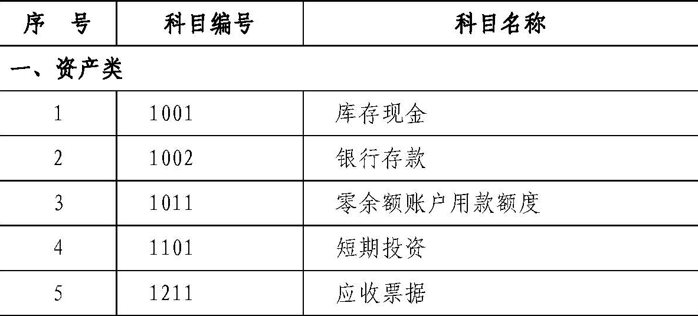
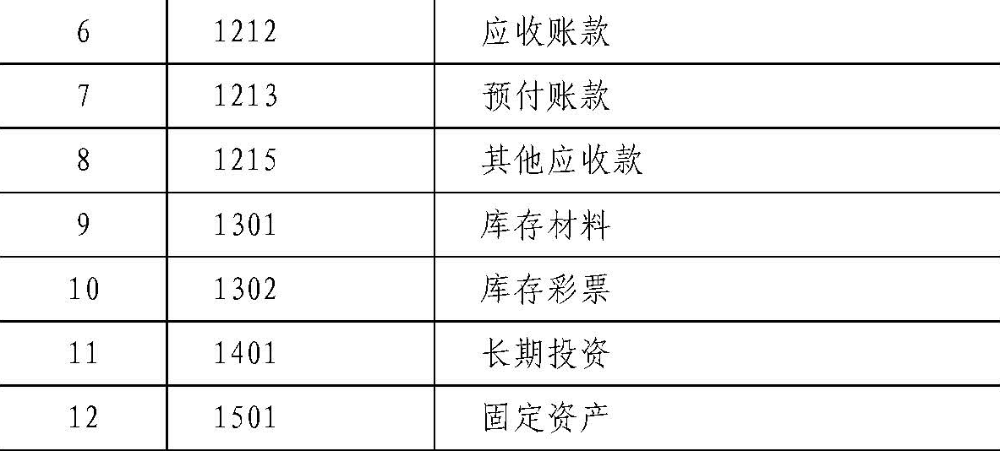
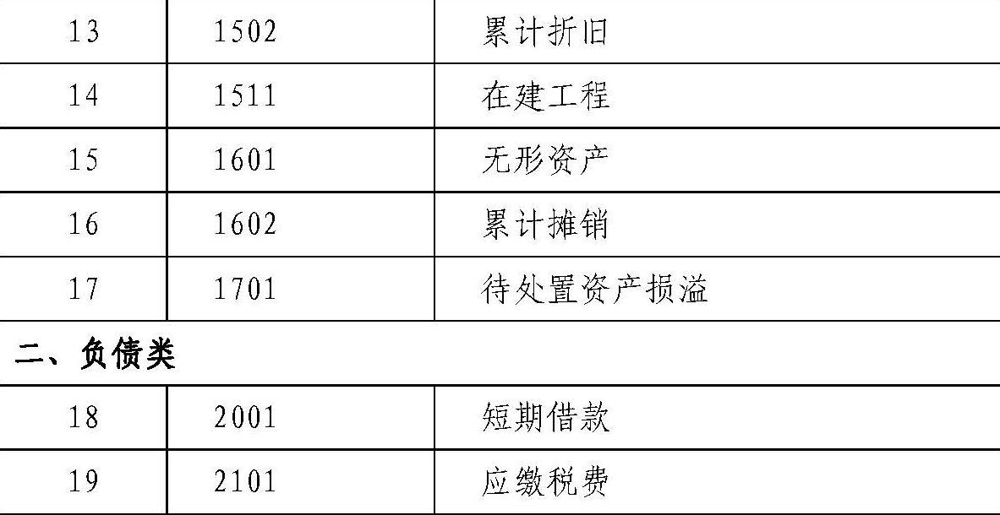
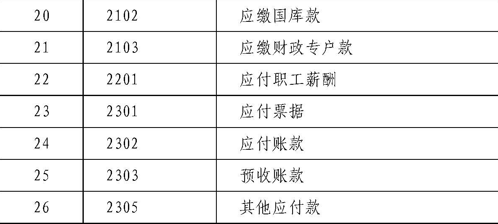
 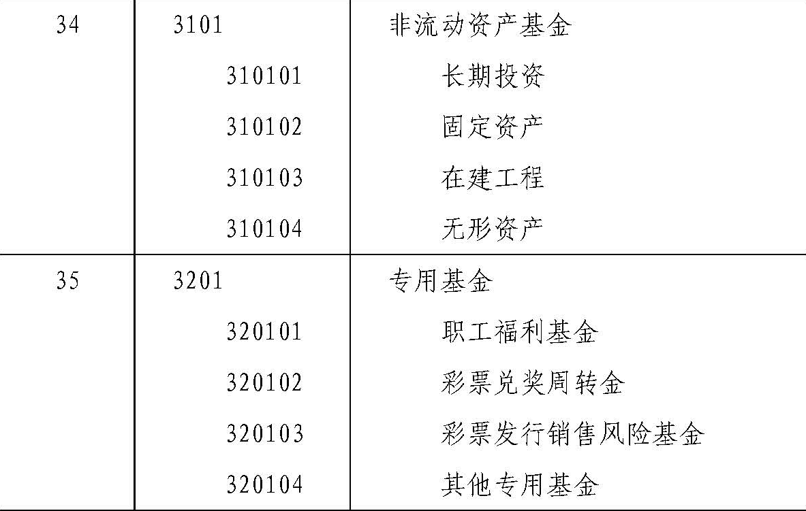
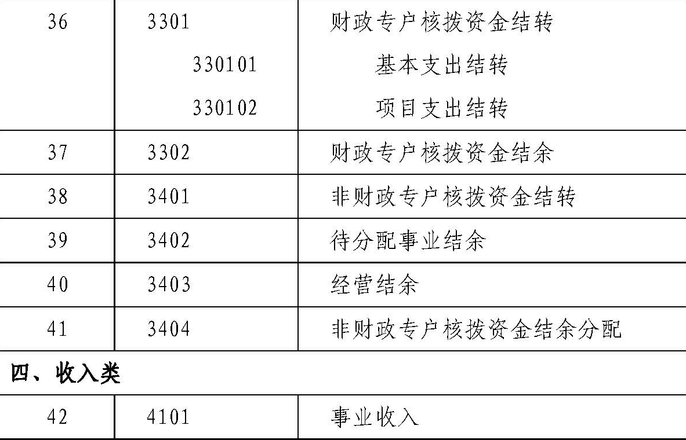
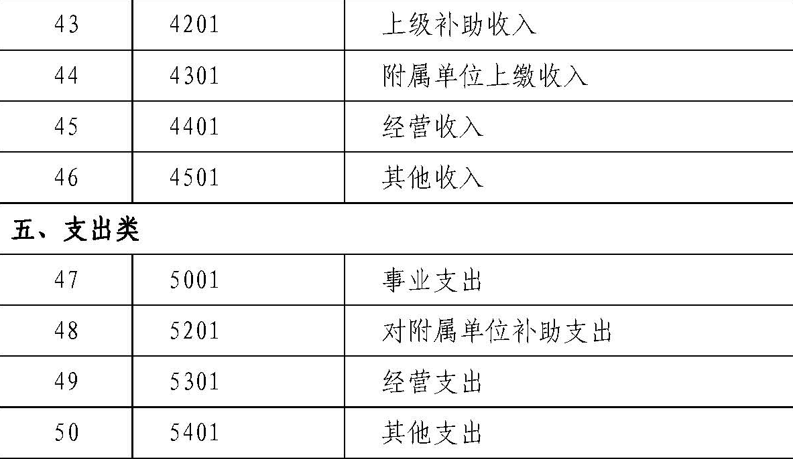
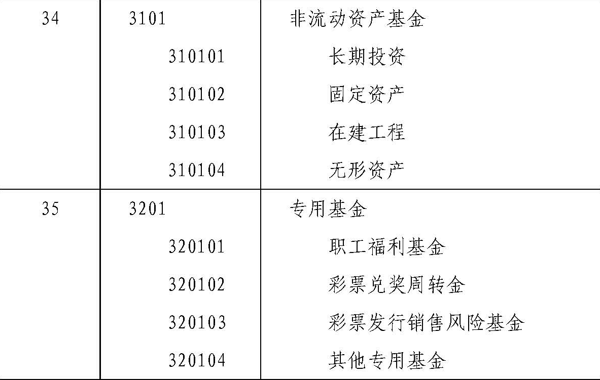
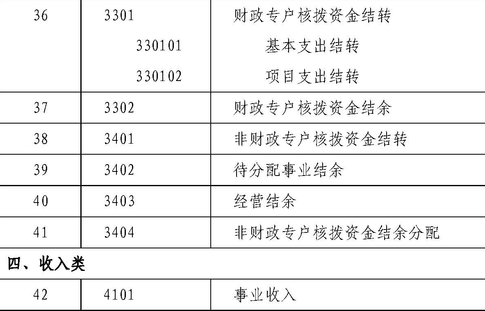
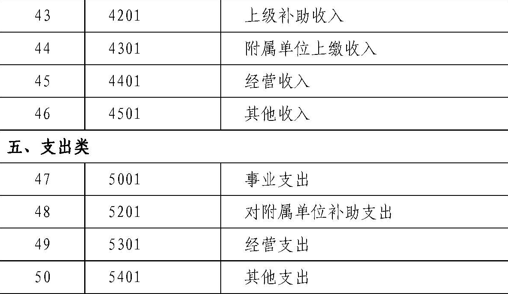
|
第三部分 会计科目使用说明
资产类
1001 库存现金
一、本科目核算彩票机构的库存现金。
二、彩票机构应当严格按照国家有关现金管理的规定收支现金，并按照本制度规定核算现金的各项收支业务。
三、库存现金的主要账务处理如下：
（一）从银行等金融机构提取现金时，按照实际提取的金额，借记本科目，贷记“银行存款”等科目；将现金存入银行等金融机构时，按照实际存入的金额，借记“银行存款”等科目，贷记本科目。
（二）因内部职工出差等原因借出现金时，按照实际借出的现金金额，借记“其他应收款”科目，贷记本科目；出差人员报销差旅费时，按照应报销的金额，借记有关科目，按照实际借出的现金金额，贷记“其他应收款”科目，按其差额，借记或贷记本科目。
（三）因开展业务等其他事项收到现金时，按照实际收到的金额，借记本科目，贷记有关科目；因购买服务或商品等其他事项支出现金时，按照实际支出的金额，借记有关科目，贷记本科目。
四、彩票机构应当设置“现金日记账”，由出纳人员根据收付款凭证，按照业务发生顺序逐笔登记。
每日终了，应当计算当日的现金收入合计数、现金支出合计数和结余数，并将结余数与实际库存数核对，做到账款相符。
每日账款核对中发现现金溢余或短缺的，应当及时进行处理。
如发现现金溢余，属于应支付给有关人员或单位的部分，借记本科目，贷记“其他应付款”科目；属于无法查明原因的部分，借记本科目，贷记“其他收入”科目。
如发现现金短缺，属于应由责任人赔偿的部分，借记“其他应收款”科目，贷记本科目；属于无法查明原因的部分，报经批准后，借记“其他支出”科目，贷记本科目。
五、彩票机构有外币现金的，应当分别按照人民币、各种外币设置“现金日记账”进行明细核算。
有关外币现金业务的账务处理参见“银行存款”科目的相关规定。
六、本科目期末借方余额，反映彩票机构实际持有的库存现金。
1002 银行存款
一、本科目核算彩票机构存入银行或其他金融机构的各种存款。
二、彩票机构应当严格按照国家有关支付结算办法的规定办理银行存款收支业务，并按照本制度规定核算银行存款的各项收支业务。
三、银行存款的主要账务处理如下：
（一）将款项存入银行或其他金融机构时，借记本科目，“库贷记存现金”、“事业收入”、“经营收入”等有关科目。
（二）提取和支出存款时，借记有关科目，贷记本科目。
四、彩票机构发生外币业务的，应当按照业务发生当日（或当期期初，下同）的即期汇率，将外币金额折算为人民币记账，并登记外币金额和汇率。
期末，各种外币账户的外币余额应当按照期末的即期汇率折算为人民币金额，作为外币账户期末人民币余额。
调整后的各种外币账户人民币余额与原账面人民币余额的差额，作为汇兑损益计入相关支出。
（一）以外币购买服务或商品时，按照购入当日的即期汇率将支付的外币或应支付的外币折算为人民币金额，借记有关科目，贷记本科目、“应付账款”等科目的外币账户。
（二）以外币收取相关款项时，按照收取款项或收入确认当日的即期汇率将收取的外币或应收取的外币折算为人民币金额，借记本科目、“应收账款”等科目的外币账户，贷记有关科目。
（三）期末，根据各外币账户按期末的即期汇率折算的人民币余额与原账面人民币余额的差额，作为汇兑损益，借记或贷记本科目、“应收账款”、“应付账款”等科目，贷记或借记“事业支出”、“经营支出”等科目。
五、彩票机构应当按开户银行或其他金融机构、存款种类及币种等，分别设置“银行存款日记账”，由出纳人员根据收付款凭证，按照业务的发生顺序逐笔登记，每日终了应结出余额。
“银行存款日记账”应定期与“银行对账单”核对，至少每月核对一次。
月度终了，彩票机构银行存款账面余额与银行对账单余额之间如有差额，必须逐笔查明原因并进行处理，按月编制“银行存款余额调节表”调节相符。
六、本科目期末借方余额，反映彩票机构实际存放在银行或其他金融机构的款项。
1011 零余额账户用款额度
一、本科目核算实行财政专户与零余额账户清算模式的彩票机构根据财政部门批复的用款计划收到和支用的零余额账户用款额度。
二、零余额账户用款额度的主要账务处理如下：
（一）在财政授权支付方式下，收到代理银行盖章的授权支付到账通知书时，根据通知书所列数额，借记本科目，贷记“事业收入”科目。
（二）按规定支用额度时，借记有关科目，贷记本科目。
（三）从零余额账户提取现金时，借记“库存现金”科目，贷记本科目。
（四）因购货退回等发生国库授权支付额度退回的，属于以前年度支付的款项，按照退回金额，借记本科目，贷记“财政专户核拨资金结转”、“财政专户核拨资金结余”、“库存材料”等有关科目；属于本年度支付的款项，按照退回金额，借记本科目，贷记“事业支出”、“库存材料”等有关科目。
三、本科目期末借方余额，反映彩票机构尚未支用的零余额账户用款额度。
本科目年末应无余额。
1101 短期投资
一、本科目核算彩票机构依法取得的，持有时间不超过1年（含1年）的投资，主要是国债投资。
二、彩票机构应当严格遵守国家法律、行政法规以及财政部门、主管部门关于对外投资的有关规定。
三、本科目应当按照国债投资的种类等进行明细核算。
四、短期投资的主要账务处理如下：
（一）短期投资在取得时，应当按照其实际成本（包括购买价款以及税金、手续费等相关税费）作为投资成本，借记本科目，贷记“银行存款”等科目。
（二）短期投资持有期间收到利息时，按照实际收到的金额，借记“银行存款”科目，贷记“其他收入——投资收益”科目。
（三）出售短期投资或到期收回短期国债本息时，按照实际收到的金额，借记“银行存款”科目，按照出售或收回短期国债的成本，贷记本科目，按照其差额，贷记或借记“其他收入——投资收益”科目。
五、本科目期末借方余额，反映彩票机构持有的短期投资成本。
1211 应收票据
一、本科目核算彩票机构因开展经营活动销售产品、提供有偿服务等收到的商业汇票，包括银行承兑汇票和商业承兑汇票。
二、本科目应当按照开出、承兑商业汇票的单位等进行明细核算。
三、应收票据的主要账务处理如下：
（一）因销售产品、提供有偿服务等收到商业汇票时，按照商业汇票的票面金额，借记本科目，按照确认的收入金额，贷记“经营收入”等科目，按照应缴增值税金额，贷记“应缴税费——应缴增值税”科目。
（二）持未到期的商业汇票向银行贴现时，按照实际收到的金额（即扣除贴现息后的净额），借记“银行存款”科目，按照贴现息金额，借记“经营支出”等科目，按照商业汇票的票面金额，贷记本科目。
（三）将持有的商业汇票背书转让以取得所需物资时，按照取得物资的成本，借记有关科目，按照商业汇票的票面金额，贷记本科目，如有差额，借记或贷记“银行存款”等科目。
（四）商业汇票到期时，应当分别以下情况处理：
1.收回应收票据，按照实际收到的商业汇票票面金额，借记“银行存款”科目，贷记本科目。
2.因付款人无力支付票款，收到银行退回的商业承兑汇票、委托收款凭证、未付票款通知书或拒付款证明时，按照商业汇票的票面金额，借记“应收账款”科目，贷记本科目。
四、彩票机构应当设置“应收票据备查簿”，逐笔登记每一应收票据的种类、号数、出票日期、到期日、票面金额、交易合同号和付款人、承兑人、背书人姓名或单位名称、背书转让日、贴现日期、贴现率和贴现净额、收款日期、收回金额和退票情况等资料。
应收票据到期结清票款或退票后，应当在备查簿内逐笔注销。
五、本科目期末借方余额，反映彩票机构持有的商业汇票票面金额。
1212 应收账款
一、本科目核算彩票机构因开展彩票发行销售业务活动、提供有偿服务、彩票机构之间因联网游戏奖金结算等应收取的款项。
二、本科目应当按照接受劳务单位（或个人）进行明细核算。
三、应收账款的主要账务处理如下：
（一）发生应收账款时，按照应收未收金额，借记本科目，按照确认的收入金额，贷记“经营收入”等科目，按照应缴增值税金额，贷记“应缴税费——应缴增值税”科目。
（二）彩票机构之间因联网游戏奖金结算产生的应收取的款项，按照实际发生的金额，借记本科目，贷记“应付返奖奖金”、“应缴财政专户款”等科目。
（三）收回应收账款时，按照实际收到的金额，借记“银行存款”等科目，贷记本科目。
四、因市场变化或不可抗力事件，或逾期三年或以上、有确凿证据表明确实无法收回的应收账款，按规定报经批准后予以核销。
核销的应收账款应在“已核销应收账款备查簿”中保留登记。
（一）转入待处置资产时，按照待核销的应收账款金额，“待借记处置资产损溢”科目，贷记本科目。
（二）报经批准予以核销时，对于因市场变化或不可抗力事件等造成的坏账损失，借记“专用基金——彩票发行销售风险基金”科目贷记“待处置资产损溢”科目；对于其他一般性坏账损失，借记“其他支出”科目，贷记“待处置资产损溢”科目。
（三）已核销应收账款在以后期间收回的，按照实际收回的金额，借记“银行存款”等科目，贷记“其他收入”科目。
五、本科目期末借方余额，反映彩票机构尚未收回的应收账款。
1213 预付账款
一、本科目核算彩票机构按照购买服务或商品合同规定预付给供应单位的款项。
二、本科目应当按照供应单位（或个人）进行明细核算。
彩票机构应当通过明细核算或辅助登记方式，登记预付账款的资金性质。
三、预付账款的主要账务处理如下：
（一）发生预付账款时，按照实际预付的金额，借记本科目，贷记“银行存款”等科目。
（二）收到所购服务或商品时，按照购入服务或商品的实际成本，借记有关科目，按照相应合同预付款金额，贷记本科目，按照补付的款项，贷记“银行存款”等科目。
收到所购固定资产、无形资产的，按照确定的资产成本，“固借记定资产”、“无形资产”科目，贷记“非流动资产基金——固定资产、无形资产”科目；同时，按照资产购置支出金额，借记“事业支出”、“经营支出”等科目，按照相应预付账款金额，贷记本科目，按照补付的款项，贷记“银行存款”等科目。
四、逾期三年或以上、有确凿证据表明因供货单位破产、撤销等原因已无望再收到所购物资，且确实无法收回的预付账款，按规定报经批准后予以核销。
核销的预付账款应在“已核销预付账款备查簿”中保留登记。
（一）转入待处置资产时，按照待核销的预付账款金额，“待借记处置资产损溢”科目，贷记本科目。
（二）报经批准予以核销时，借记“其他支出”科目，贷记“待处置资产损溢”科目。
（三）已核销预付账款在以后期间收回的，按照实际收回的金额，借记“银行存款”等科目，贷记“其他收入”科目。
五、本科目期末借方余额，反映彩票机构实际预付但尚未结算的款项。
1215 其他应收款
一、本科目核算彩票机构除应收票据、应收账款、预付账款以外的其他各项应收及暂付款项，如职工预借的差旅费、拨付给内部有关部门的备用金、应向职工收取的各种垫付款项等。
二、本科目应当按照其他应收款的类别以及债务单位（或个人）进行明细核算。
三、其他应收款的主要账务处理如下：
（一）发生其他各种应收及暂付款项时，借记本科目，贷记“银行存款”、“库存现金”等科目。
（二）收回或转销其他各种应收及暂付款项时，“库存现金”借记、“银行存款”等科目，贷记本科目。
（三）彩票机构内部实行备用金制度的，有关部门使用备用金以后应当及时到财务部门报销并补足备用金。
财务部门核定并发放备用金时，借记本科目，贷记“库存现金”等科目。
根据报销数用现金补足备用金定额时，借记有关科目，贷记“库存现金”等科目，报销数和拨补数都不再通过本科目核算。
四、逾期三年或以上、有确凿证据表明确实无法收回的其他应收款，按规定报经批准后予以核销。
核销的其他应收款应在“已核销其他应收款备查簿”中保留登记。
（一）转入待处置资产时，按照待核销的其他应收款金额，借记“待处置资产损溢”科目，贷记本科目。
（二）报经批准予以核销时，借记“其他支出”科目，贷记“待处置资产损溢”科目。
（三）已核销其他应收款在以后期间收回的，按照实际收回的金额，借记“银行存款”等科目，贷记“其他收入”科目。
五、本科目期末借方余额，反映彩票机构尚未收回的其他应收款。
1301 库存材料
一、本科目核算彩票机构在开展业务活动及其他活动中为耗用而储存的各种材料、燃料、包装物、低值易耗品、热敏纸、投注单及达不到固定资产标准的用具、装具等的实际成本。彩票机构随买随用的零星办公用品，可以在购进时直接列作支出，不通过本科目核算。
二、本科目应当按照库存材料的种类、规格、保管地点等进行明细核算。
三、库存材料的主要账务处理如下：
（一）库存材料在取得时，应当按照其实际成本入账。
1.购入的库存材料，其成本包括购买价款、相关税费、运输费、装卸费、保险费以及其他使得库存材料达到目前场所和状态所发生的其他支出。购入的库存材料验收入库时，按确定的成本，借记本科目，贷记“银行存款”、“应付账款”等科目。
2.接受捐赠、无偿调入的库存材料，其成本按照有关凭据注明的金额加上相关税费、运输费等确定；没有相关凭据的，其成本比照同类或类似库存材料的市场价格加上相关税费、运输费等确定；没有相关凭据且其同类或类似库存材料的市场价格也无法可靠取得的，该库存材料以名义金额（即人民币1元，下同）入账。接受捐赠、无偿调入的库存材料验收入库，按照确定的成本，借记本科目，按照发生的相关税费、运输费等，贷记“银行存款”等科目，按照其差额，贷记“其他收入”科目。以名义金额入账的情况下，按照名义金额，借记本科目，“其贷记他收入”科目；按照发生的相关税费、运输费等，借记“其他支出”科目，贷记“银行存款”等科目。
（二）库存材料在发出时，应当根据实际情况采用先进先出法、加权平均法或者个别计价法确定发出库存材料的实际成本。计价方法一经确定，不得随意变更。低值易耗品的成本于领用时一次转销。
1.开展彩票发行销售业务活动等领用、发出库存材料时，按照领用、发出库存材料的实际成本，借记“事业支出”、“经营支出”等科目，贷记本科目。
2.对外捐赠、无偿调出库存材料时，按照库存材料的账面余额，借记“待处置资产损溢”科目，贷记本科目。实际捐出、调出库存材料时，按照“待处置资产损溢”科目的相应余额，借记“其他支出”科目，贷记“待处置资产损溢”科目。
四、彩票机构的库存材料应当定期进行清查盘点，至少每年盘点一次。对于发生的库存材料盘盈、盘亏或者毁损、报废，应当及时查明原因，按规定报经批准后进行账务处理。
（一）盘盈的库存材料，按照同类或类似库存材料的实际成本或市场价格确定入账价值；同类或类似库存材料的实际成本、市场价格均无法可靠取得的，按照名义金额入账。
盘盈的库存材料，按照确定的入账价值，借记本科目，贷记“其他收入”科目。
（二）库存材料发生盘亏或者毁损、报废时，按照待处置库存材料的账面余额，借记“待处置资产损溢”科目，贷记本科目。报经批准予以处置时，“待处置资产损溢”按照科目的相应余额，借记“其他支出”科目，贷记“待处置资产损溢”科目。处置库存材料过程中所取得的收入、发生的费用，以及处置收入扣除相关处置费用后的净收入的账务处理，参见“待处置资产损溢”科目。
五、本科目期末借方余额，反映彩票机构库存材料的实际成本。
1302 库存彩票
一、本科目核算彩票机构购进的已验收入库彩票的实际成本。
二、本科目应当按照彩票品种及游戏进行明细核算。
三、库存彩票的主要账务处理如下：
（一）按照彩票印制合同或订货单规定向彩票印制单位支付印制费时，按照实际支付的印制费金额，借记“事业支出”科目，贷记“银行存款”科目。
（二）购入的彩票验收入库时，按照实际支付的印制费等确定的成本，借记本科目，贷记“库存彩票基金”科目。
（三）发出库存彩票时，应当按照加权平均法或个别计价法确定发出彩票的实际成本，借记“库存彩票基金”科目，贷记本科目。
（四）发生彩票退回时，借记本科目，贷记“库存彩票基金”科目。
四、彩票机构应当严格执行彩票出入库制度，按彩票品种建立库存彩票明细账和台账，定期或不定期盘点，定期核对库存彩票明细账、台账与总账，年度终了前应当进行全面盘点清查。
五、对于盘盈、盘亏及毁损、报废的库存彩票，彩票机构应当及时查明原因，按照规定报经批准后进行账务处理。
（一）盘盈的库存彩票，按照同类库存彩票的入账成本确认入账价值，借记本科目，贷记“库存彩票基金”科目。
（二）库存彩票发生盘亏或者毁损、报废时，按照待处置库存彩票的账面价值，借记“待处置资产损溢”科目，贷记本科目。报经批准予以处置时，按照处置库存彩票对应的库存彩票基金，借记“库存彩票基金”科目，贷记“待处置资产损溢”。处置毁损、报废库存彩票过程中所取得的收入、发生的相关费用，以及处置收入扣除相关费用后的净收入的账务处理，参见“待处置资产损溢”科目。
六、本科目期末借方余额，反映库存彩票的实际成本。
1401 长期投资
一、本科目核算彩票机构依法取得的，持有时间超过1年（不含1年）的股权和债权性质的投资。
二、彩票机构应当严格控制对外投资。
在保证彩票机构正常运转和业务发展的前提下，按照国家有关规定可以对外投资的，应当履行相关审批程序。
彩票机构对外投资必须是与彩票发行销售业务有关的项目，不得从事股票、期货、基金、企业债券等投资，国家另有规定的除外。
彩票机构以非货币性资产对外投资的，应当按照国家有关规定进行资产评估，合理确定资产价值。
三、本科目应当按照长期投资的种类和被投资单位等进行明细核算。
四、长期投资的主要账务处理如下：
（一）长期股权投资1.长期股权投资在取得时，应当按照其实际成本作为投资成本。
（1）以货币资金取得的长期股权投资，按照实际支付的全部价款（包括购买价款以及税金、手续费等相关税费）作为投资成本，借记本科目，贷记“银行存款”等科目；同时，按照投资成本金额，借记“事业基金”科目，贷记“非流动资产基金——长期投资”科目。
（2）以固定资产取得的长期股权投资，按照评估价值加上相关税费作为投资成本，借记本科目，贷记“非流动资产基金——长期投资”科目，按发生的相关税费，借记“其他支出”科目，贷记“银行存款”、“应缴税费”等科目；同时，按照投出固定资产对应的非流动资产基金，借记“非流动资产基金——固定资产”科目，按照投出固定资产已计提折旧，借记“累计折旧”科目，按照投出固定资产的账面余额，贷记“固定资产”科目。
（3）以已入账无形资产取得的长期股权投资，按照评估价值加上相关税费作为投资成本，借记本科目，贷记“非流动资产基金长期投资”科目，按发生的相关税费，借记“其他支出”科目，贷记“银行存款”、“应缴税费”等科目；同时，按照投出无形资产对应的非流动资产基金，借记“非流动资产基金——无形资产”科目，按照投出无形资产已计提摊销，借记“累计摊销”科目，按照投出无形资产的账面余额，贷记“无形资产”科目。
以未入账无形资产取得的长期股权投资，按照评估价值加上相关税费作为投资成本，借记本科目，贷记“非流动资产基金长期投资”科目，按发生的相关税费，借记“其他支出”科目，贷记“银行存款”、“应缴税费”等科目。
2.长期股权投资持有期间，收到利润等投资收益时，按照实际收到的金额，借记“银行存款”等科目，贷记“其他收入——投资收益”科目。
3.转让长期股权投资，转入待处置资产时，按照待转让长期股权投资的账面余额，借记“待处置资产损溢——处置资产价值”科目，贷记本科目。
实际转让时，按照所转让长期股权投资对应的非流动资产基金，借记“非流动资产基金——长期投资”科目，贷记“待处置资产损溢处置资产价值”科目。
转让长期股权投资过程中取得价款、发生相关税费，以及转让价款扣除相关税费后的净收入的账务处理，参见“待处置资产损溢”科目。
4.因被投资单位破产、清算等原因，有确凿证据表明长期股权投资发生损失，按规定报经批准后予以核销。
将待核销长期股权投资转入待处置资产时，按照待核销的长期股权投资账面余额，借记“待处置资产损溢——处置资产价值”科目，贷记本科目。
报经批准予以核销时，借记“非流动资产基金——长期投资”科目，贷记“待处置资产损溢处置资产价值”科目。
（二）长期债券投资
1.长期债券投资在取得时，应当按照其实际成本作为投资成本。
以货币资金购入的长期债券投资，按照实际支付的全部价款（包括购买价款以及税金、手续费等相关税费）作为投资成本，借记本科目，贷记“银行存款”等科目；同时，按照投资成本金额，借记“事业基金”科目，贷记“非流动资产基金——长期投资”科目。
2.长期债券投资持有期间收到利息时，按照实际收到的金额，借记“银行存款”等科目，贷记“其他收入——投资收益”科目。
3.对外转让或到期收回长期债券投资本息，按照实际收到的金额，借记“银行存款”等科目，按照收回长期投资的成本，贷记本科目，按照其差额，贷记或借记“其他收入——投资收益”科目；同时，按照收回长期投资对应的非流动资产基金，借记“非流动资产基金——长期投资”科目，贷记“事业基金”科目。
五、本科目期末借方余额，反映彩票机构持有的长期投资成本。
1501 固定资产
一、本科目核算彩票机构固定资产的原价。
固定资产是指彩票机构持有的使用期限超过1年（不含1年）、单位价值在规定标准以上，并在使用过程中基本保持原有物质形态的资产。
单位价值虽未达到规定标准，但使用期限超过1年（不含1年）的大批同类物资，作为固定资产核算和管理。
二、彩票机构的固定资产一般分为六类：
房屋及构筑物；专用设备；通用设备；文物和陈列品；图书、档案；家具、用具、装具及动植物。
有关说明如下：
（一）固定资产的各组成部分具有不同的使用寿命、适用不同折旧率且可以分别确定各自原价的，应当分别将各组成部分确认为单项固定资产。
（二）对于应用软件，如果其构成相关硬件不可缺少的组成部分，应当将该软件价值包括在所属硬件价值中，一并作为固定资产进行核算；如果其不构成相关硬件不可缺少的组成部分，应当将该软件作为无形资产核算。
（三）彩票机构以经营租赁租入的固定资产，不作为固定资产核算，应当另设“经营租赁固定资产备查簿”进行登记。
（四）购入需要安装的固定资产，应当先通过“在建工程”科目核算，安装完毕交付使用时再转入本科目核算。
（五）购建的房屋及构筑物，不能够分清购建成本中的房屋及构筑物部分与土地使用权部分的，应当全部作为固定资产核算；能够分清购建成本中的房屋及构筑物部分与土地使用权部分的，应当将其中的房屋及构筑物部分作为固定资产核算，将其中的土地使用权部分作为无形资产核算。
三、彩票机构应当根据固定资产定义，结合本单位的具体情况，制定适合于本单位的固定资产目录、具体分类方法，作为进行固定资产核算的依据。
彩票机构应当设置“固定资产登记簿”和“固定资产卡片”，按照固定资产类别、项目和使用部门等进行明细核算。
出租、出借的固定资产，应当设置备查簿进行登记。
四、固定资产的主要账务处理如下：
（一）固定资产在取得时，应当按照其实际成本入账。
1.购入的固定资产，其成本包括购买价款、相关税费以及固定资产交付使用前所发生的可归属于该项资产的运输费、装卸费、安装调试费和专业人员服务费等。
以一笔款项购入多项没有单独标价的固定资产，按照各项固定资产同类或类似资产市场价格的比例对总成本进行分配，分别确定各项固定资产的成本。
购入不需安装的固定资产时，按照确定的固定资产成本，借记本科目，贷记“非流动资产基金——固定资产”科目；同时，按照实际支付金额，借记“事业支出”、“经营支出”等科目，贷记“银行存款”等科目。
购入需要安装的固定资产，先通过“在建工程”科目核算。
安装完工交付使用时，借记本科目，贷记“非流动资产基金——固定资产”科目；同时，借记“非流动资产基金在建工程”科目，贷记“在建工程”科目。
购入扣留质量保证金的固定资产，在取得固定资产时，按照确定的成本（包括质量保证金），借记本科目不需安装或“在建工程”科目需要安装，贷记“非流动资产基金——固定资产、在建工程”科目。
同时，对于取得固定资产全款发票（包括质量保证金）的，应当按照构成资产成本的全部支出金额，借记“事业支出”、“经营支出”等科目，按照实际支付金额，贷记“银行存款”等科目，按照扣留的质量保证金，“其他应付款”贷记扣留期在1年以内（含1年）或“长期应付款”扣留期超过1年科目；对于取得的发票金额不包括质量保证金的，应当按照不包括质量保证金的支出金额，借记“事业支出”、“经营支出”等科目，贷记“银行存款”等科目。
质保期满支付质量保证金时，借记“其他应付款”、“长期应付款”科目，或借记“事业支出”、“经营支出”等科目，贷记“银行存款”等科目。
质保期满因固定资产质量有问题等原因未支付质量保证金的，应当相应调减固定资产的账面余额，并重新计算折旧额。
2.自行建造的固定资产，其成本包括建造该项资产至交付使用前所发生的全部必要支出。
工程完工交付使用时，按照自行建造过程中发生的实际支出，借记本科目，贷记“非流动资产基金固定资产”科目；同时，借记“非流动资产基金在建工程”科目，贷记“在建工程”科目。
已交付使用但尚未办理竣工决算手续的固定资产，按照估计价值入账，待确定实际成本后再进行调整。
3.在原有固定资产基础上进行改建、扩建、修缮后的固定资产，其成本按照原固定资产账面价值（“固定资产”科目账面余额减去“累计折旧”科目账面余额后的净值）加上改建、扩建、修缮发生的支出，再扣除固定资产拆除部分的账面价值后的金额确定。
将固定资产转入改建、扩建、修缮时，按固定资产的账面价值，借记“在建工程”科目，贷记“非流动资产基金在建工程”科目；同时，按固定资产对应的非流动资产基金，借记“非流动资产基金固定资产”科目，按照固定资产已计提折旧，借记“累计折旧”科目，按固定资产的账面余额，贷记本科目。
工程完工交付使用时，借记本科目，贷记“非流动资产基金固定资产”科目；同时，借记“非流动资产基金——在建工程”科目，贷记“在建工程”科目。
4.以融资租赁租入的固定资产，其成本按照租赁协议或者合同确定的租赁价款、相关税费以及固定资产交付使用前所发生的可归属于该项资产的运输费、途中保险费、安装调试费等确定。
融资租入的固定资产，按照确定的成本，借记本科目不需安装或“在建工程”科目需安装，按照租赁协议或者合同确定的租赁价款，贷记“长期应付款”科目，按照其差额，贷记“非流动资产基金——固定资产、在建工程”科目；同时，按照实际支付的相关税费、运输费、途中保险费、安装调试费等，借记“事业支出”、“经营支出”等科目，贷记“银行存款”等科目。
定期支付租金时，按照支付的租金金额，借记“事业支出”“经本制度所称账面价值，是指某会计科目的账面余额减去相关备抵科目（如“累计折旧”、“累计摊销”科目）账面余额后的净值。
本制度所称账面余额，是指某会计科目的账面实际余额。
营支出”等科目，贷记“银行存款”等科目；同时，借记“长期应付款”科目，贷记“非流动资产基金——固定资产”科目。
跨年度分期付款购入固定资产的账务处理，参照融资租入固定资产的账务处理。
5.接受捐赠、无偿调入的固定资产，其成本按照有关凭据注明的金额加上相关税费、运输费等确定；没有相关凭据的，其成本比照同类或类似固定资产的市场价格加上相关税费、运输费等确定；没有相关凭据、同类或类似固定资产的市场价格也无法可靠取得的，该固定资产以名义金额入账。
接受捐赠、无偿调入的固定资产，按照确定的固定资产成本，借记本科目不需安装或“在建工程”科目需安装，贷记“非流动资产基金固定资产、在建工程”科目；按照发生的相关税费、运输费等，借记“其他支出”科目，贷记“银行存款”等科目。
（二）按月计提固定资产折旧时，按照实际计提金额，借记“非流动资产基金固定资产”科目，贷记“累计折旧”科目。
（三）与固定资产有关的后续支出，应当分别以下情况处理：
1.为增加固定资产使用效能或延长其使用年限而发生的改建、扩建或修缮等后续支出，应当计入固定资产成本，通过“在建工程”科目核算，完工交付使用时转入本科目。
有关账务处理参见“在建工程”科目。
2.为维护固定资产的正常使用而发生的日常修理等后续支出，应当计入当期支出但不计入固定资产成本，借记“事业支出”、“经营支出”等科目，贷记“银行存款”等科目。
（四）报经批准出售、无偿调出、对外捐赠固定资产或以固定资产对外投资，应当分别以下情况处理：
1.出售、无偿调出、对外捐赠固定资产时，按照待处置固定资产的账面价值，借记“待处置资产损溢”科目，按照固定资产已计提折旧，借记“累计折旧”科目，按照固定资产的账面余额，贷记本科目。实际出售、调出、捐出时，按照处置固定资产对应的非流动资产基金，借记“非流动资产基金固定资产”科目，贷记“待处置资产损溢”科目。出售固定资产过程中取得价款、发生相关税费，以及出售价款扣除相关税费后的净收入的账务处理，参见“待处置资产损溢”科目。
2.以固定资产对外投资，按照评估价值加上相关税费作为投资成本，借记“长期投资”科目，贷记“非流动资产基金——长期投资”科目，按照发生的相关税费，借记“其他支出”科目，贷记“银行存款”、“应缴税费”等科目；同时，按照投出固定资产对应的非流动资产基金，借记“非流动资产基金——固定资产”科目，按照投出固定资产已计提折旧，借记“累计折旧”科目，按照投出固定资产的账面余额，贷记本科目。
五、彩票机构的固定资产应当定期进行清查盘点，至少每年盘点一次。对于发生的固定资产盘盈、盘亏或者毁损、报废，应当及时查明原因，按照规定报经批准后进行账务处理。
（一）盘盈的固定资产，按照同类或类似固定资产的市场价格确定入账价值；同类或类似固定资产的市场价格无法可靠取得的，以名义金额入账。盘盈的固定资产，按照确定的入账价值，借记本科目，贷记“非流动资产基金固定资产”科目。
（二）固定资产发生盘亏或者毁损、报废时，按照待处置固定资产的账面价值，借记“待处置资产损溢”科目，按照固定资产已计提折旧，借记“累计折旧”科目，按照固定资产的账面余额，贷记本科目。报经批准予以处置时，按照处置固定资产对应的非流动资产基金，借记“非流动资产基金——固定资产”科目，贷记“待处置资产损溢”科目。处置毁损、报废固定资产过程中所取得的收入、发生的相关费用，以及处置收入扣除相关费用后的净收入的账务处理，参见“待处置资产损溢”科目。
六、本科目期末借方余额，反映彩票机构固定资产的原价。
1502 累计折旧
一、本科目核算彩票机构固定资产计提的累计折旧。
二、本科目应当按照所对应固定资产的类别、项目等进行明细核算。
三、彩票机构应当对除下列各项资产以外的其他固定资产计提折旧：
（一）文物和陈列品；（二）动植物；（三）图书、档案；（四）以名义金额计量的固定资产。
四、折旧是指在固定资产使用寿命内，按照确定的方法对应折旧金额进行系统分摊。
有关说明如下：
（一）彩票机构应当根据固定资产的性质和实际使用情况，合理确定其折旧年限。
省级以上财政部门、主管部门对彩票机构固定资产折旧年限作出规定的，从其规定。
（二）彩票机构一般应当采用年限平均法计提固定资产折旧。
（三）彩票机构固定资产的应折旧金额为其成本，计提固定资产折旧不考虑预计净残值。
（四）彩票机构一般应当按月计提固定资产折旧。
当月增加的固定资产，当月不提折旧，从下月起计提折旧；当月减少的固定资产，当月照提折旧，从下月起不提折旧。
（五）固定资产提足折旧后，无论能否继续使用，均不再计提折旧；提前报废的固定资产，也不再补提折旧。
已提足折旧的固定资产，可以继续使用的，应当继续使用，规范管理。
（六）计提融资租入固定资产折旧时，应当采用与自有固定资产相一致的折旧政策。
能够合理确定租赁期届满时将会取得租入固定资产所有权的，应当在租入固定资产尚可使用年限内计提折旧；无法合理确定租赁期届满时能够取得租入固定资产所有权的，应当在租赁期与租入固定资产尚可使用年限两者中较短的期间内计提折旧。
（七）固定资产因改建、扩建或修缮等原因而延长其使用年限的，应当按照重新确定的固定资产的成本以及重新确定的折旧年限，重新计算折旧额。
五、累计折旧的主要账务处理如下：
（一）按月计提固定资产折旧时，按照应计提折旧金额，“非借记流动资产基金固定资产”科目，贷记本科目。
（二）固定资产处置时，按照所处置固定资产的账面价值，借记“待处置资产损溢”科目，按照固定资产已计提折旧，借记本科目，按照固定资产的账面余额，贷记“固定资产”科目。
六、本科目期末贷方余额，反映彩票机构计提的固定资产折旧累计数。
1511 在建工程
一、本科目核算彩票机构已经发生必要支出，但尚未完工交付使用的各种建筑（包括新建、改建、扩建、修缮等）和设备安装工程的实际成本。
二、本科目应当按照工程性质和具体工程项目等进行明细核算。
三、彩票机构的基本建设投资应当按照国家有关规定单独建账、单独核算，同时按照本制度的规定至少按月并入本科目及其他相关科目反映。
彩票机构应当在本科目下设置“基建工程”明细科目，核算由基建账套并入的在建工程成本。
有关基建并账的具体账务处理另行规定。
四、在建工程（非基本建设项目）的主要账务处理如下：
（一）建筑工程
1.将固定资产转入改建、扩建或修缮等时，按照固定资产的账面价值，借记本科目，贷记“非流动资产基金——在建工程”科目；同时，按照固定资产对应的非流动资产基金，借记“非流动资产基金固定资产”科目，按照固定资产已计提折旧，借记“累计折旧”科目，按照固定资产的账面余额，贷记“固定资产”科目。
2.根据工程价款结算账单与施工企业结算工程价款时，借记本科目，贷记“非流动资产基金——在建工程”科目；同时，按照实际支付的工程价款，借记“事业支出”等科目，贷记“银行存款”等科目。
3.彩票机构为建筑工程借入的专门借款的利息，属于建设期间发生的，计入在建工程成本，借记本科目，贷记“非流动资产基金在建工程”科目；同时，借记“其他支出”科目，贷记“银行存款”科目。
4.工程完工交付使用时，按照建筑工程所发生的实际成本，借记“固定资产”科目，贷记“非流动资产基金——固定资产”科目；同时，借记“非流动资产基金在建工程”科目，贷记本科目。
（二）设备安装
1.购入需要安装的设备时，按照确定的成本，借记本科目，贷记“非流动资产基金——在建工程”科目；同时，按照实际支付金额，借记“事业支出”、“经营支出”等科目，贷记“银行存款”等科目。
融资租入需要安装的设备，按照确定的成本，借记本科目，按照租赁协议或者合同确定的租赁价款，贷记“长期应付款”科目，按照其差额，贷记“非流动资产基金在建工程”科目；同时，按照实际支付的相关税费、运输费、途中保险费等，借记“事业支出”、“经营支出”等科目，贷记“银行存款”等科目。
2.发生安装费用时，按照确定的成本，借记本科目，贷记“非流动资产基金在建工程”科目；同时，借记“事业支出”、“经营支出”等科目，贷记“银行存款”等科目。
3.设备安装完工交付使用时，借记“固定资产”科目，贷记“非流动资产基金——固定资产”科目；同时，借记“非流动资产基金在建工程”科目，贷记本科目。
五、本科目期末借方余额，反映彩票机构尚未完工的在建工程发生的实际成本。
1601 无形资产
一、本科目核算彩票机构无形资产的原价。
无形资产是指彩票机构持有的，没有实物形态的可辨认非货币性资产，包括专利权、商标权、著作权、土地使用权、非专利技术等。
彩票机构购入的不构成相关硬件不可缺少组成部分的应用软件，应当作为无形资产核算。
二、本科目应当按照无形资产的类别、项目等进行明细核算。
三、无形资产的主要账务处理如下：
（一）无形资产在取得时，应当按照其实际成本入账。
1.外购的无形资产，其成本包括购买价款、相关税费以及可归属于该项资产达到预定用途所发生的其他支出。
购入无形资产时，按照确定的无形资产成本，借记本科目，贷记“非流动资产基金无形资产”科目；同时，按照实际支付金额，借记“事业支出”等科目，贷记“银行存款”等科目。
2.委托软件公司开发软件视同外购无形资产进行处理。
支付软件开发费时，按照实际支付金额，借记“事业支出”等科目，贷记“银行存款”等科目。
软件开发完成交付使用时，按照软件开发费总额，借记本科目，贷记“非流动资产基金无形资产”科目。
3.自行开发并按法律程序申请取得的无形资产，按照依法取得时发生的注册费、聘请律师费等费用，借记本科目，贷记“非流动资产基金无形资产”科目；同时，借记“事业支出”等科目，贷记“银行存款”等科目。
依法取得前所发生的研究开发支出，应于发生时直接计入当期支出，借记“事业支出”等科目，贷记“银行存款”等科目。
4.接受捐赠、无偿调入的无形资产，其成本按照有关凭据注明的金额加上相关税费等确定；没有相关凭据的，其成本比照同类或类似无形资产的市场价格加上相关税费等确定；没有相关凭据、同类或类似无形资产的市场价格也无法可靠取得的，该资产以名义金额入账。接受捐赠、无偿调入的无形资产，按照确定的无形资产成本，借记本科目，贷记“非流动资产基金无形资产”科目；同时，按照发生的相关税费等，借记“其他支出”科目，贷记“银行存款”等科目。
（二）按月计提无形资产摊销时，按照应计提摊销金额，“非借记流动资产基金无形资产”科目，贷记“累计摊销”科目。
（三）与无形资产有关的后续支出，应当分别以下情况处理：
1.为增加无形资产的使用效能而发生的后续支出，如对软件进行升级改造或扩展其功能等所发生的支出，应当计入无形资产的成本，借记本科目，贷记“非流动资产基金——无形资产”科目；同时，借记“事业支出”等科目，贷记“银行存款”等科目。
2.为维护无形资产的正常使用而发生的后续支出，如对软件进行漏洞修补、技术维护等所发生的支出，应当计入当期支出但不计入无形资产成本，借记“事业支出”等科目，贷记“银行存款”等科目。
（四）报经批准转让、无偿调出、对外捐赠无形资产或以无形资产对外投资，应当分别以下情况处理：
1.转让、无偿调出、对外捐赠无形资产时，按照待处置无形资产的账面价值，借记“待处置资产损溢”科目，按照无形资产已计提摊销，借记“累计摊销”科目，按照无形资产的账面余额，贷记本科目。
实际转让、调出、捐出时，按照处置无形资产对应的非流动资产基金，借记“非流动资产基金——无形资产”科目，贷记“待处置资产损溢”科目。转让无形资产过程中取得价款、发生相关税费，以及出售价款扣除相关税费后的净收入的账务处理，参见“待处置资产损溢”科目。
2.以已入账无形资产对外投资，按照评估价值加上相关税费作为投资成本，借记“长期投资”科目，贷记“非流动资产基金——长期投资”科目，按发生的相关税费，借记“其他支出”科目，贷记“银行存款”、“应缴税费”等科目；同时，按照投出无形资产对应的非流动资产基金，借记“非流动资产基金——无形资产”科目，按照无形资产已计提摊销，借记“累计摊销”科目，按照无形资产的账面余额，贷记本科目。
（五）无形资产预期不能为彩票机构带来财务潜力或经济利益的，应当按规定报经批准后将该无形资产的账面价值予以核销。转入待处置资产时，按照待核销无形资产的账面价值，借记“待处置资产损溢”科目，按照无形资产已计提摊销，借记“累计摊销”科目，按照无形资产的账面余额，贷记本科目。报经批准予以核销时，按照核销无形资产对应的非流动资产基金，借记“非流动资产基金——无形资产”科目，贷记“待处置资产损溢”科目。
四、本科目期末借方余额，反映彩票机构无形资产的原价。
1602 累计摊销
一、本科目核算彩票机构无形资产计提的累计摊销。
二、本科目应当按照对应无形资产的类别、项目等进行明细核算。
三、彩票机构应当对无形资产进行摊销，以名义金额计量的无形资产除外。
摊销是指在无形资产使用寿命内，按照确定的方法对应摊销金额进行系统分摊。
有关说明如下：
（一）彩票机构应当按照如下原则确定无形资产的摊销年限：
法律规定了有效年限的，按照法律规定的有效年限作为摊销年限；法律没有规定有效年限的，按照相关合同或单位申请书中的受益年限作为摊销年限；法律没有规定有效年限、相关合同或单位申请书也没有规定受益年限的，按照不少于10年的期限摊销。
对于取得的单位价值小于1000元的无形资产，可以于取得的当月，将其成本一次性全部转销。
（二）彩票机构应当采用年限平均法对无形资产进行摊销。
（三）彩票机构无形资产的应摊销金额为其成本。
（四）彩票机构应当自无形资产取得当月起，按月计提无形资产摊销。
（五）因发生后续支出而增加无形资产成本的，应当按照重新确定的无形资产成本，重新计算摊销额。
四、累计摊销的主要账务处理如下：
（一）按月计提无形资产摊销时，按照应计提摊销金额，“非借记流动资产基金——无形资产”科目，贷记本科目。
（二）无形资产处置时，按照所处置无形资产的账面价值，借记“待处置资产损溢”科目，按照无形资产已计提摊销，借记本科目，按照无形资产的账面余额，贷记“无形资产”科目。
五、本科目期末贷方余额，反映彩票机构计提的无形资产摊销累计数。
1701 待处置资产损溢
一、本科目核算彩票机构待处置资产的价值及处置损溢。
彩票机构资产处置包括资产的出售、出让、转让、对外捐赠、无偿调出、盘亏、报废、毁损以及货币性资产损失核销等。
二、本科目应当按照待处置资产项目进行明细核算；对于在处置过程中取得相关收入、发生相关费用的处置项目，还应设置“处置资产价值”、“处置净收入”明细科目，进行明细核算。
三、彩票机构处置资产一般应当先记入本科目，按规定报经批准后及时进行账务处理。
年度终了结账前一般应处置完毕。
四、待处置资产损溢的主要账务处理如下：
（一）按规定报经批准予以核销的应收及预付款项、长期投资、无形资产。
1.转入待处置资产时，借记本科目核销无形资产的，还应借记“累计摊销”科目，贷记“应收账款”、“预付账款”、“其他应收款”、“长期投资”、“无形资产”等科目。
2.报经批准予以核销时，借记“其他支出”科目应收及预付款项核销或“非流动资产基金——长期投资、无形资产”科目长期投资、无形资产核销，贷记本科目。
（二）盘亏或者毁损、报废的库存材料、库存彩票、固定资产。
1.转入待处置资产时，借记本科目（处置资产价值）处置固定资产的，还应借记“累计折旧”科目，贷记“库存材料”、“库存彩票”、“固定资产”等科目。
2.报经批准予以处置时，“其他支出”借记科目处置库存材料、“库存彩票基金”科目处置库存彩票或“非流动资产基金——固定资产”科目处置固定资产，贷记本科目（处置资产价值）。
3.处置毁损、报废库存材料、库存彩票、固定资产过程中收到残值变价收入、保险理赔和过失人赔偿等，借记“库存现金”、“银行存款”等科目，贷记本科目（处置净收入）。
4.处置毁损、报废库存材料、库存彩票、固定资产过程中发生相关费用，借记本科目（处置净收入），贷记“库存现金”、“银行存款”等科目。
5.处置完毕，按照处置收入扣除相关处置费用后的净收入，借记本科目（处置净收入），贷记“应缴国库款”等科目；如果处置收入小于相关处置费用的，按照相关处置费用超出处置收入的净损失，借记“其他支出”科目，贷记本科目（处置净收入）。
（三）对外捐赠、无偿调出库存材料、固定资产、无形资产1.转入待处置资产时，借记本科目捐赠、调出固定资产、无形资产的，还应借记“累计折旧”、“累计摊销”科目，贷记“库存材料”、“固定资产”、“无形资产”等科目。
2.实际捐出、调出时，借记“其他支出”科目捐出、调出库存‐41‐材料或“非流动资产基金——固定资产、无形资产”科目捐出、调出固定资产、无形资产，贷记本科目。
（四）转让（出售）长期股权投资、固定资产、无形资产1.转入待处置资产时，借记本科目（处置资产价值）转让固定资产、无形资产的，还应借记“累计折旧”、“累计摊销”科目，贷记“长期投资”、“固定资产”、“无形资产”等科目。
2.实际转让时，借记“非流动资产基金——长期投资、固定资产、无形资产”科目，贷记本科目（处置资产价值）。
3.转让过程中取得价款、发生相关税费，以及转让价款扣除相关税费后的净收入的账务处理，按照国家有关规定，比照本科目“四（二）”有关毁损、报废库存材料、固定资产进行处理。
五、本科目期末如为借方余额，反映尚未处置完毕的各种资产价值及净损失；期末如为贷方余额，反映尚未处置完毕的各种资产净溢余。
年度终了报经批准处置后，本科目一般应无余额。
负债类
2001 短期借款
一、本科目核算彩票机构借入的期限在1年内（含1年)的各种借款。
二、本科目应当按照贷款单位和贷款种类进行明细核算。
三、短期借款的主要账务处理如下：
（一）借入各种短期借款时，按照实际借入的金额，借记“银行存款”科目，贷记本科目。
（二）银行承兑汇票到期，本单位无力支付票款的，按照银行承兑汇票的票面金额，借记“应付票据”科目，贷记本科目。
（三）支付短期借款利息时，借记“其他支出”科目，贷记“银行存款”科目。
（四）归还短期借款本金时，借记本科目，贷记“银行存款”科目。
四、本科目期末贷方余额，反映彩票机构尚未偿还的短期借款本金。
2101 应缴税费
一、本科目核算彩票机构按照税法等规定计算应缴纳的各种税费，包括营业税、增值税、城市维护建设税、教育费附加、车船税、房产税、城镇土地使用税、企业所得税等。
彩票机构代扣代缴的个人所得税，也通过本科目核算。
彩票机构应缴纳的印花税不需要预提应缴税费，直接通过支出等有关科目核算，不在本科目核算。
二、本科目应当按照应缴纳的税费种类进行明细核算。
属于增值税一般纳税人的彩票机构，其应缴增值税明细账中应设置“进项税额”、“已交税金”、“销项税额”、“进项税额转出”等专栏。
三、应缴税费的主要账务处理如下：
（一）发生营业税、城市维护建设税、教育费附加纳税义务的，按照税法规定计算的应缴税费金额，借记“待处置资产损溢——处置净收入”科目出售不动产应缴的税费或有关支出科目，贷记本科目。
实际缴纳时，借记本科目，贷记“银行存款”科目。
（二）属于增值税一般纳税人的彩票机构购入非自用材料的，按照确定的成本（不含增值税进项税额），借记“库存材料”科目，按增值税专用发票上注明的增值税额，借记本科目（应缴增值税——进项税额），按照实际支付或应付的金额，贷记“银行存款”、“应付账款”等科目。
属于增值税一般纳税人的彩票机构所购进的非自用材料发生盘亏、毁损、报废、对外捐赠、无偿调出等税法规定不得从增值税销项税额中抵扣进项税额的，将所购进的非自用材料转入待处置资产时，按照材料的账面余额与相关增值税进项税额转出金额的合计金额，借记“待处置资产损溢”科目，按照材料的账面余额，贷记“库存材料”科目，按照转出的增值税进项税额，贷记本科目（应缴增值税——进项税额转出）。
属于增值税一般纳税人的彩票机构销售应税产品或提供应税服务时，按照包含增值税的价款总额，“银行存款”“应收账款”借记、、“应收票据”等科目，按照扣除增值税销项税额后的价款金额，贷记“经营收入”等科目，按照增值税专用发票上注明的增值税金额，贷记本科目（应缴增值税——销项税额）。
属于增值税一般纳税人的彩票机构实际缴纳增值税时，借记本科目（应缴增值税——已交税金），贷记“银行存款”科目。
属于增值税小规模纳税人的彩票机构销售应税产品或提供应税服务时，按照实际收到或应收的价款，借记“银行存款”、“应收账款”、“应收票据”等科目，按照实际收到或应收价款扣除增值税额后的金额，贷记“经营收入”等科目，按照应缴增值税金额，贷记本科目（应缴增值税）实际缴纳增值税时，。
借记本科目（应缴增值税），贷记“银行存款”科目。
（三）发生车船税、房产税、城镇土地使用税纳税义务的，按照税法规定计算的应缴税金数额，借记有关科目，贷记本科目。实际缴纳时，借记本科目，贷记“银行存款”科目。
（四）代扣代缴个人所得税的，按照税法规定计算应代扣代缴的个人所得税金额，借记“应付职工薪酬”科目，贷记本科目。
实际缴纳时，借记本科目，贷记“银行存款”科目。
（五）发生企业所得税纳税义务的，按照税法规定计算的应缴税金数额，借记“非财政专户核拨资金结余分配”科目，贷记本科目。实际缴纳时，借记本科目，贷记“银行存款”科目。
（六）发生其他纳税义务的，按照应缴纳的税费金额，借记有关科目，贷记本科目。实际缴纳时，借记本科目，贷记“银行存款”等科目。
四、本科目期末贷方余额，反映彩票机构应缴未缴的税费金额；本科目期末借方余额，反映彩票机构多缴纳的税费金额。
2102 应缴国库款
一、本科目核算彩票机构按照规定应缴入国库的款项（应缴税费除外），主要包括应缴彩票公益金和应缴国有资产处置净收入。
二、本科目应当按照应缴国库的款项类别进行明细核算。
三、应缴国库款的主要账务处理如下：
（一）应缴彩票公益金
1.月末，彩票机构分配彩票销售资金时，按照彩票资金分配比例计算确定的应缴国库的彩票公益金金额，借记“彩票销售结算”科目，贷记本科目（应缴彩票公益金）。
2.按照有关规定，将彩票逾期未兑奖的奖金纳入彩票公益金时，借记“应付返奖奖金”科目，贷记本科目（应缴彩票公益金）。
（二）应缴国有资产处置净收入处置国有资产取得应上缴的处置净收入时，借记“待处置资产损溢”科目，贷记本科目（应缴国有资产处置净收入）。
（三）上缴款项时，借记本科目，贷记“银行存款”等科目。
四、本科目期末贷方余额，反映彩票机构应缴入国库但尚未缴纳的款项。
2103 应缴财政专户款
一、本科目核算彩票机构按照规定应缴入财政专户的款项。
二、本科目应当按照应缴财政专户的款项类别进行明细核算。
三、应缴财政专户款的主要账务处理如下：
（一）月末，彩票机构分配彩票销售资金时，按照彩票资金分配比例计算确定的应缴财政专户的款项金额，借记“彩票销售结算”科目，贷记本科目。
（二）上缴款项时，借记本科目，贷记“银行存款”等科目。
四、本科目期末贷方余额，反映彩票机构应缴入财政专户但尚未缴纳的款项。
2201 应付职工薪酬
一、本科目核算彩票机构按照有关规定应付给职工及为职工支付的各种薪酬。
包括基本工资、绩效工资、国家统一规定的津贴补贴、社会保险费、住房公积金等。
二、本科目应当根据国家有关规定按照“工资（离退休费）”、“地方（部门）津贴补贴”、“其他个人收入”以及“社会保险费”、“住房公积金”等进行明细核算。
三、应付职工薪酬的主要账务处理如下：
（一）计算当期应付职工薪酬时，借记“事业支出”、“经营支出”等科目，贷记本科目。
（二）向职工支付工资、津贴补贴等薪酬时，借记本科目，贷记“银行存款”等科目。
（三）按照税法规定代扣代缴个人所得税时，借记本科目，贷记“应缴税费——应缴个人所得税”科目。
（四）按照国家有关规定缴纳职工社会保险费和住房公积金时，借记本科目，贷记“银行存款”等科目。
（五）从应付职工薪酬中支付其他款项，借记本科目，贷记“银行存款”等科目。
四、本科目期末贷方余额，反映彩票机构应付未付的职工薪酬。
2301 应付票据
一、本科目核算彩票机构因购买服务或商品等开出、承兑的商业汇票，包括银行承兑汇票和商业承兑汇票。
二、本科目应当按照债权单位进行明细核算。
三、应付票据的主要账务处理如下：
（一）开出、承兑商业汇票时，借记“库存材料”等科目，贷记本科目。以承兑商业汇票抵付应付账款时，借记“应付账款”科目，贷记本科目。
（二）支付银行承兑汇票的手续费时，借记“事业支出”、“经营支出”等科目，贷记“银行存款”等科目。
（三）商业汇票到期时，应当分别以下情况处理：
1.收到银行支付到期票据的付款通知，实际支付时，借记本科目，贷记“银行存款”科目。
2.银行承兑汇票到期，本单位无力支付票款的，按照银行承兑汇票的票面金额，借记本科目，贷记“短期借款”科目。
3.商业承兑汇票到期，本单位无力支付票款的，按照银行承兑汇票的票面金额，借记本科目，贷记“应付账款”科目。
四、彩票机构应当设置“应付票据备查簿”，详细登记每一应付票据的种类、号数、出票日期、到期日、票面金额、交易合同号、收款人姓名或单位名称，以及付款日期和金额等资料。应付票据到期结清票款后，应当在备查簿内逐笔注销。
五、本科目期末贷方余额，反映彩票机构开出、承兑的尚未到期的商业汇票票面金额。
2302 应付账款
一、本科目核算彩票机构因购买服务或商品、彩票机构之间因联网游戏奖金结算等产生的应付款项。
二、本科目应当按照债权单位（或个人）进行明细核算。
三、应付账款的主要账务处理如下：
（一）购入材料、物资等已验收入库但货款尚未支付的，按照应付未付金额，借记“库存材料”等科目，贷记本科目。
（二）彩票机构之间因联网游戏奖金结算产生的应付款项，按照实际发生的金额，借记“应付返奖奖金”科目，贷记本科目。
（三）偿还应付账款时，按照实际支付的金额，借记本科目，贷记“银行存款”等科目。
（四）开出、承兑商业汇票抵付应付账款，借记本科目，“应贷记付票据”科目。
（五）无法偿付或债权人豁免偿还的应付账款，借记本科目，贷记“其他收入”科目。
四、本科目期末贷方余额，反映彩票机构尚未支付的应付账款。
2303 预收账款
一、本科目核算彩票机构预收彩票销售款、按合同规定预收的款项等。
二、本科目应当按照债权单位（或个人）进行明细核算。
三、预收账款的主要账务处理如下：
（一）预收彩票销售款
1.收到彩票代销者预存的销售款时，按照实际收到的金额，借记“银行存款”等科目，贷记本科目。
2.实现彩票销售时，按照彩票销售结算金额，借记本科目，贷记“彩票销售结算”科目。
3.实行内扣方式结算应付代销费的，结算彩票代销者代销费时，按照从彩票代销者缴交的彩票销售资金中直接抵扣的资金金额，借记“应付代销费”科目，贷记本科目。
（二）其他预收账款
1.从付款方预收款项时，按照实际收到的金额，借记“银行存款”等科目，贷记本科目。
2.确认有关收入时，按照从付款方预收的金额，借记本科目，按照应确认的收入金额，贷记“经营收入”等科目，按照付款方补付或退回付款方的金额，借记或贷记“银行存款”等科目。
（三）无法偿付或债权人豁免偿还的预收账款，借记本科目，贷记“其他收入”科目。
四、本科目期末贷方余额，反映彩票机构核算的彩票代销者预存销售款结余和按合同规定预收但尚未实际结算的款项。
2305 其他应付款
一、本科目核算彩票机构除应缴税费、应缴国库款、应缴财政专户款、应付职工薪酬、应付票据、应付账款、预收账款之外的其他各项偿还期限在1年内（含1年）的应付及暂收款项，如存入保证金、彩票投注设备押金等。
二、本科目应当按照其他应付款的类别以及债权单位（或个人）进行明细核算。
三、其他应付款的主要账务处理如下：
（一）发生其他各项应付及暂收款项时，借记“银行存款”等科目，贷记本科目。
（二）支付其他应付款项时，借记本科目，贷记“银行存款”等科目。
（三）无法偿付或债权人豁免偿还的其他应付款项，借记本科目，贷记“其他收入”科目。
四、本科目期末贷方余额，反映彩票机构尚未支付的其他应付款。
2401 应付返奖奖金
一、本科目核算彩票机构按照彩票游戏规则确定的比例从彩票销售额中提取，用于支付给中奖者的资金，包括当期返奖奖金、奖池和调节基金。
二、本科目应当按照彩票品种及游戏、一般调节基金设置明细科目。其中，彩票品种及游戏相关明细科目下应当按照当期返奖奖金、奖池、调节基金进行明细核算。当期返奖奖金是指按照彩票游戏规则规定的比例在当期彩票奖金中提取并用于支付给中奖者的资金。奖池是指彩票游戏提取奖金与实际中出奖金的累积资金差额。调节基金是指按照彩票销售额的一定比例提取的资金、逾期未退票的票款和浮动奖取整后的余额。调节基金应当专项用于支付各种不可预见的奖金风险支出或开展派奖。停止销售的彩票游戏兑奖期结束后，奖池资金和调节基金有结余的，转为一般调节基金，用于不可预见情况下的奖金风险支出或开展派奖。
三、应付返奖奖金的主要账务处理如下：
（一）当期返奖奖金
1.提取当期返奖奖金时，按照彩票资金分配比例计算确定的当期返奖奖金金额，借记“彩票销售结算”科目，贷记本科目。
2.销售机构、代销者兑奖时，按照实际兑付金额，借记本科目，贷记“银行存款”、“应缴税费”、“预收账款”等科目。
3.逾期未兑付的弃奖奖金转入彩票公益金时，按照实际转出的金额，借记本科目，贷记“应缴国库款”科目。
4.彩票机构之间因联网游戏奖金结算产生的应收款项，按照实际发生的金额，借记“应收账款”科目，贷记本科目；产生的应付款项，借记本科目，贷记“应付账款”科目。
（二）奖池
1.彩票游戏设置奖池的，兑付当期返奖奖金后，按照提取的当期返奖奖金与当期实际中出奖金的差额，借记或贷记本科目（XX品种——当期返奖奖金），贷记或借记本科目（XX品种——奖池）。
2.使用奖池资金兑付中奖者奖金时，按照实际兑付金额，借记本科目，贷记“银行存款”等科目。
（三）调节基金
1.彩票游戏设置调节基金的，在提取调节基金时，按照彩票资金分配比例计算确定的调节基金金额，借记“彩票销售结算”科目，贷记本科目。
2.彩票游戏设置奖池的，奖池资金达到一定额度后，按照彩票游戏规则中规定将超过部分转入该彩票游戏的调节基金时，按照实际转出的金额，借记本科目（XX品种——奖池），贷记本科目（XX品种——调节基金）。
3.使用调节基金支付各种不可预见的奖金风险支出和开展派奖时，按照实际支出的金额，借记本科目，贷记“银行存款”等科目。
4.使用调节基金弥补奖池资金时，按照实际弥补奖池资金的金额，借记本科目（XX品种——调节基金），贷记本科目（XX品种——奖池）。
（四）停止销售的彩票游戏兑奖期结束后，奖池资金和调节基金有结余的，转入一般调节基金时，按照实际转出的金额，借记本科目（XX品种——奖池、调节基金），贷记本科目（一般调节基金）。
四、本科目期末贷方余额，反映彩票机构尚未支付的奖金和调节基金。
2402 应付代销费
一、本科目核算彩票机构按照彩票代销合同的约定比例从彩票销售额中提取，用于支付给彩票代销者的资金。
二、本科目应当按照彩票代销者和彩票结算方式进行明细核算。
三、应付代销费的主要账务处理如下：
（一）提取应付代销费时，按合同约定比例计算确定的金额，借记“彩票销售结算”科目，贷记本科目。
（二）实行内扣方式结算应付代销费的，结算彩票代销者代销费时，按照从彩票代销者缴交的彩票销售资金中直接抵扣的资金金额，借记本科目，贷记“预收账款”等科目。
（三）不实行内扣方式结算应付代销费的，支付彩票代销者代销费时，按照实际支付的代销费金额，借记本科目，贷记“银行存款”等科目。
四、本科目期末贷方余额，反映彩票机构尚未支付给彩票代销者的代销费。
2403 彩票销售结算
一、本科目核算彩票机构彩票销售资金的归集和分配情况。
二、本科目应当按照彩票品种及游戏、彩票发行销售方式进行明细核算。
三、彩票销售结算的主要账务处理如下：
（一）彩票机构实现彩票销售时，借记“预收账款”等科目，贷记本科目。
（二）月末彩票机构分配彩票销售资金时，借记本科目，“应贷记缴国库款”、“应缴财政专户款”、“应付返奖奖金”、“应付代销费”、“应付账款”等科目。
四、本科目期末一般无余额。
2501 长期借款
一、本科目核算彩票机构借入的期限超过1年(不含1年)的各种借款。
二、本科目应当按照贷款单位和贷款种类进行明细核算。
对于基建项目借款，还应按具体项目进行明细核算。
三、长期借款的主要账务处理如下：
（一）借入各项长期借款时，按照实际借入的金额，借记“银行存款”科目，贷记本科目。
（二）为购建固定资产支付的专门借款利息，分别以下情况处理：
1.属于工程项目建设期间支付的，计入工程成本，按照支付的利息金额，借记“在建工程”科目，贷记“非流动资产基金——在建工程”科目；同时，借记“其他支出”科目，贷记“银行存款”科目。
2.属于工程项目完工交付使用后支付的，计入当期支出但不计入工程成本，按照支付的利息金额，借记“其他支出”科目，贷记“银行存款”科目。
（三）其他长期借款利息，按照支付的利息金额，借记“其他支出”科目，贷记“银行存款”科目。
（四）归还长期借款本金时，借记本科目，贷记“银行存款”科目。
四、本科目期末贷方余额，反映彩票机构尚未偿还的长期借款本金。
2502 长期应付款
一、本科目核算彩票机构发生的偿还期限超过1年（不含1年）的应付款项，如以融资租赁租入固定资产的租赁费、跨年度分期付款购入固定资产的价款等。
二、本科目应当按照长期应付款的类别以及债权单位（或个人）进行明细核算。
三、长期应付款的主要账务处理如下：
（一）发生长期应付款时，借记“固定资产”、“在建工程”等科目，贷记本科目、“非流动资产基金”等科目。
（二）支付长期应付款时，借记“事业支出”、“经营支出”等科目，贷记“银行存款”等科目；同时，借记本科目，贷记“非流动资产基金”科目。
（三）无法偿付或债权人豁免偿还的长期应付款，借记本科目，贷记“其他收入”科目。
四、本科目期末贷方余额，反映彩票机构尚未支付的长期应付款。
净资产类
3001 事业基金
一、本科目核算彩票机构拥有的非限定用途的净资产，主要为非财政专户核拨资金结余分配后滚存的金额。
二、事业基金的主要账务处理如下：
（一）年末，应当对非财政专户核拨资金专项结转资金各项目情况进行分析，将已完成项目的留归本单位使用的剩余资金转入事业基金，按照项目剩余资金金额，借记“非财政专户核拨资金结转”科目，贷记本科目。
（二）年末，将“非财政专户核拨资金结余分配”科目余额转入事业基金，借记或贷记“非财政专户核拨资金结余分配”科目，贷记或借记本科目。
（三）以货币资金取得长期投资，按照实际支付的全部价款（包括购买价款以及税金、手续费等相关税费）作为投资成本，借记“长期投资”科目，贷记“银行存款”等科目；同时，按照投资成本金额，借记本科目，贷记“非流动资产基金——长期投资”科目。
（四）对外转让或到期收回长期债券投资本息，按照实际收到的金额，借记“银行存款”等科目，按照收回长期投资的成本，贷记“长期投资”科目，按照其差额，贷记或借记“其他收入——投资收益”科目；同时，按照收回长期投资对应的非流动资产基金，借记“非流动资产基金——长期投资”科目，贷记本科目。
三、彩票机构发生需要调整以前年度非财政专户核拨资金结余的事项，通过本科目核算。国家另有规定的，从其规定。
四、本科目期末贷方余额，反映彩票机构历年积存的非限定用途净资产的金额。
3005 库存彩票基金
一、本科目核算彩票发行机构购进的已验收入库的彩票占用的金额。
二、本科目应当按照彩票品种及游戏进行明细核算。
三、库存彩票基金的主要账务处理如下：
（一）购入的彩票验收入库时，按确定的成本，借记“库存彩票”科目，贷记本科目。
（二）发出库存彩票时，按照加权平均法或个别计价法确定发出彩票的实际成本，借记本科目，贷记“库存彩票”科目。
（三）发生彩票退回时，借记“库存彩票”科目，贷记本科目。
三、本科目期末贷方余额，反映彩票机构期末库存彩票占用的金额。
3101 非流动资产基金
一、本科目核算彩票机构长期投资、固定资产、在建工程、无形资产等非流动资产占用的金额。
二、本科目应当设置“长期投资”“固定资产”“在建工程”、“无形资产”等明细科目，进行明细核算。
三、非流动资产基金的主要账务处理如下：
（一）非流动资产基金应当在取得长期投资、固定资产、在建工程、无形资产等非流动资产或发生相关支出时予以确认。取得相关资产或发生相关支出时，借记“长期投资”、“固定资产”、“在建工程”、“无形资产”等科目，贷记本科目等有关科目；同时或待以后发生相关支出时，借记“事业支出”等有关科目，贷记“银行存款”等科目。
（二）计提固定资产折旧、无形资产摊销时，应当冲减非流动资产基金。计提固定资产折旧、无形资产摊销时，按照计提的折旧、摊销金额，借记本科目（固定资产、无形资产），贷记“累计折旧”、“累计摊销”科目。
（三）处置长期投资、固定资产、无形资产，以及以固定资产、无形资产对外投资时，应当冲销该资产对应的非流动资产基金。
1.以固定资产、无形资产对外投资，按照评估价值加上相关税费作为投资成本，借记“长期投资”科目，贷记本科目（长期投资），按照发生的相关税费，借记“其他支出”科目，贷记“银行存款”等科目；同时，按照投出固定资产、无形资产对应的非流动资产基金，借记本科目（固定资产、无形资产），按照投出资产已计提折旧、摊销，借记“累计折旧”、“累计摊销”科目，按照投出资产的账面余额，贷记“固定资产”、“无形资产”科目。
2.转让（出售）长期投资、固定资产、无形资产，转入待处置资产时，借记“待处置资产损溢”、“累计折旧”处置固定资产或“累计摊销”处置无形资产科目，贷记“长期投资”、“固定资产”、“无形资产”等科目。
实际转让时，借记本科目（有关资产明细科目），贷记“待处置资产损溢”科目。
四、本科目期末贷方余额，反映彩票机构非流动资产占用的金额。
3201 专用基金
一、本科目核算彩票机构按规定提取或者设置的具有专门用途的净资产，主要包括职工福利基金、彩票兑奖周转金、彩票发行销售风险基金、其他专用基金等。
二、本科目应当按照专用基金的类别进行明细核算。
三、专用基金的主要账务处理如下：
（一）提取职工福利基金按照有关规定计提职工福利费的，按照计提金额，借记有关支出科目，贷记本科目（职工福利基金）。年末，按规定从本年度非财政专户核拨资金结余中提取职工福利基金的，按照提取金额，借记“非财政专户核拨资金结余分配”科目，贷记本科目（职工福利基金）。
（二）取得彩票兑奖周转金取得拨付的彩票兑奖周转金时，按照实际取得的金额，借记“银行存款”等科目，贷记“事业收入”科目；同时，借记“事业支出”科目，贷记本科目。
（三）取得彩票发行销售风险基金取得拨付的彩票发行销售风险基金时，按照实际取得的金额，借记“银行存款”等科目，贷记“事业收入”科目；同时，借记“事业支出”科目，贷记本科目。
（四）提取、设置其他专用基金根据规定提取的其他专用基金，按照实际提取的金额，借记有关支出科目或“非财政专户核拨资金结余分配”等科目，贷记本科目。
根据规定设置的其他专用基金，按照实际收到的金额，借记“银行存款”等科目，贷记本科目。
（五）使用专用基金按规定使用专用基金时，借记本科目，贷记“银行存款”等科目；使用专用基金形成固定资产的，还应借记“固定资产”科目，“非贷记流动资产基金——固定资产”科目。
四、本科目期末贷方余额，反映彩票机构专用基金余额。
3301 财政专户核拨资金结转
一、本科目核算彩票机构滚存的财政专户核拨资金结转资金，包括基本支出结转和项目支出结转。
二、本科目应当设置“基本支出结转”、“项目支出结转”两个明细科目，并在“基本支出结转”明细科目下按照“人员经费”、“日常公用经费”进行明细核算，在“项目支出结转”明细科目下按照具体项目进行明细核算；本科目还应按照《政府收支分类科目》中“支出功能分类科目”的相关科目及《彩票机构财务管理办法》规定的相关支出科目进行明细核算。
三、财政专户核拨资金结转的主要账务处理如下：
（一）期末，将事业收入本期发生额结转至本科目，借记“事业收入——基本支出、项目支出”科目，贷记本科目（基本支出结转、项目支出结转）；将事业支出（财政专户核拨资金支出）本期发生额结转至本科目，借记本科目（基本支出结转、项目支出结转），贷记“事业支出——财政专户核拨资金支出（基本支出、项目支出）”或“事业支出——基本支出（财政专户核拨资金支出）、项目支出（财政专户核拨资金支出）”科目。
（二）年末，完成上述（一）结转后，应当对各明细项目执行情况进行分析，按照有关规定将符合财政专户核拨资金结余性质的项目余额转入财政专户核拨资金结余，借记或贷记本科目（项目支出结转——XX项目），贷记或借记“财政专户核拨资金结余”科目。
（三）按规定上缴财政专户核拨资金结转资金或注销财政专户核拨资金结转额度的，按照实际上缴金额或注销的额度数额，借记本科目，贷记“银行存款”等科目。
取得主管部门归集调入财政专户核拨资金结转资金或额度的，做相反会计分录。
四、彩票机构发生需要调整以前年度财政专户核拨资金结转的事项，通过本科目核算。
五、本科目期末贷方余额，反映彩票机构财政专户核拨资金结转资金金额。
3302 财政专户核拨资金结余
一、本科目核算彩票机构滚存的财政专户核拨资金项目支出结余资金。
二、本科目应当按照《政府收支分类科目》中“支出功能分类科目”的相关科目及《彩票机构财务管理办法》规定的相关支出科目进行明细核算。
三、财政专户核拨资金结余的主要账务处理如下：
（一）年末，对各明细项目执行情况进行分析，按照有关规定将符合财政专户核拨资金结余性质的项目余额结转至“财政专户核拨资金结余”科目，借记或贷记“财政专户核拨资金结转——项目支出结转（XX项目）”科目，贷记或借记本科目。
（二）按规定上缴财政专户核拨资金结余资金或注销财政专户核拨资金结余额度的，按照实际上缴金额或注销的额度数额，借记本科目，贷记“银行存款”等科目。
取得主管部门归集调入财政专户核拨资金结余资金或额度的，做相反会计分录。
四、彩票机构发生需要调整以前年度财政专户核拨资金结余的事项，通过本科目核算。
五、本科目期末贷方余额，反映彩票机构财政专户核拨资金结余资金金额。
3401 非财政专户核拨资金结转
一、本科目核算彩票机构除事业收支以外的各专项资金收入与其相关支出相抵后剩余滚存的、须按规定用途使用的结转资金。
二、本科目应当按照非财政专项资金的具体项目进行明细核算。
三、非财政专户核拨资金结转的主要账务处理如下：
（一）期末，将上级补助收入、附属单位上缴收入、其他收入本期发生额中的专项资金收入结转至本科目，借记“上级补助收入”、“附属单位上缴收入”、“其他收入”科目下各专项资金收入明细科目，贷记本科目；将事业支出、对附属单位补助支出、其他支出本期发生额中的专项资金支出结转至本科目，借记本科目，贷记“事业支出——非财政专户核拨专项支出”或“事业支出——项目支出（非财政专户核拨资金支出）”、“对附属单位补助支出”和“其他支出”科目下各专项资金支出明细科目。
（二）年末，完成上述（一）结转后，应当对非财政专户核拨资金专项结转资金各项目情况进行分析，将已完成项目的项目剩余资金区分以下情况处理：
缴回原专项资金拨入单位的，借记本科目（XX项目），贷记“银行存款”等科目；留归本单位使用的，借记本科目（XX项目），贷记“事业基金”科目。
四、彩票机构发生需要调整以前年度非财政专户核拨资金结转的事项，通过本科目核算。
五、本科目期末贷方余额，反映彩票机构非财政专户核拨资金专项结转资金金额。
3402 待分配事业结余
一、本科目核算彩票机构一定期间除财政专户核拨资金收支（事业收支）、非财政专户核拨资金专项收支和经营收支以外的其他各项收支相抵后的余额。
二、待分配事业结余的主要账务处理如下：
（一）期末，将上级补助收入、附属单位上缴收入、其他收入本期发生额中的非专项资金收入结转至本科目，“上级补助收入”借记、“附属单位上缴收入”、“其他收入”科目下各非专项资金收入明细科目，贷记本科目；将事业支出、对附属单位补助支出、其他支出本期发生额中的其他资金支出结转至本科目，借记本科目，贷记“事业支出——其他资金支出”“事业支出——基本支出或（其他资金支出）、项目支出（其他资金支出）”、“对附属单位补助支出”科目、“其他支出”科目下各非专项资金支出明细科目。
（二）年末，完成上述（一）结转后，将本科目余额结转至“非财政专户核拨资金结余分配”科目，借记或贷记本科目，贷记或借记“非财政专户核拨资金结余分配”科目。
三、本科目期末如为贷方余额，反映彩票机构自年初至报告期末累计实现的待分配事业结余；如为借方余额，反映彩票机构自年初至报告期末累计发生的事业亏损。
年末结账后，本科目应无余额。
3403 经营结余
一、本科目核算彩票机构一定期间各项经营收支相抵后余额弥补以前年度经营亏损后的余额。
二、经营结余的主要账务处理如下：
（一）期末，将经营收入本期发生额结转至本科目，借记“经营收入”科目，贷记本科目；将经营支出本期发生额结转至本科目，借记本科目，贷记“经营支出”科目。
（二）年末，完成上述（一）结转后，如本科目为贷方余额，将本科目余额结转至“非财政专户核拨资金结余分配”科目，借记本科目，贷记“非财政专户核拨资金结余分配”科目；如本科目为借方余额，为经营亏损，不予结转。
三、本科目期末如为贷方余额，反映彩票机构自年初至报告期末累计实现的经营结余弥补以前年度经营亏损后的经营结余；如为借方余额，反映彩票机构截至报告期末累计发生的经营亏损。
年末结账后，本科目一般无余额；如为借方余额，反映彩票机构累计发生的经营亏损。
3404 非财政专户核拨资金结余分配
一、本科目核算彩票机构本年度非财政专户核拨资金结余分配的情况和结果。
二、非财政专户核拨资金结余分配的主要账务处理如下：
（一）年末，将“待分配事业结余”科目的相关余额结转至本科目，借记或贷记“待分配事业结余”科目，贷记或借记本科目；“经将营结余”科目贷方余额结转至本科目，借记“经营结余”科目，贷记本科目。
（二）有企业所得税缴纳义务的彩票机构计算出应缴纳的企业所得税，借记本科目，贷记“应缴税费——应缴企业所得税”科目；（三）按照有关规定提取职工福利基金的，按照提取的金额，借记本科目，贷记“专用基金——职工福利基金”科目。
（四）年末，按照规定完成上述（一）至（三）处理后，将本科目余额结转至“事业基金”科目，借记或贷记本科目，贷记或借记“事业基金”科目。
三、年末结账后，本科目应无余额。
收入类
4101 事业收入
一、本科目核算财政部门核拨给彩票机构用于开展彩票发行销售业务活动及其辅助活动的业务收入。
二、本科目应当设置“基本支出”“项目支出”和两个明细科目；两个明细科目下按照《政府收支分类科目》中“支出功能分类”的相关科目进行明细核算；同时在“基本支出”明细科目下按照“人员经费”和“日常公用经费”进行明细核算，在“项目支出”明细科目下按照具体项目进行明细核算。
三、事业收入的主要账务处理如下：
（一）收到从财政专户核拨的事业收入时，按照实际收到的核拨金额，借记“银行存款”等科目，贷记本科目。
（二）期末，将本科目本期发生额中的专项资金收入结转至“财政专户核拨资金结转”科目，借记本科目下各专项资金收入明细科目，贷记“财政专户核拨资金结转”科目；将本科目本期发生额中的非专项资金收入结转至“财政专户核拨资金结余”科目，借记本科目下各非专项资金收入明细科目，贷记“财政专户核拨资金结余”科目。
四、期末结账后，本科目应无余额。
4201 上级补助收入
一、本科目核算彩票机构从主管部门取得的非财政专户核拨资金收入。
二、本科目应当按照发放补助单位、补助项目等进行明细核算。
上级补助收入中如有专项资金收入，还应按具体项目进行明细核算。
三、上级补助收入的主要账务处理如下：
（一）收到上级补助收入时，按照实际收到的金额，借记“银行存款”等科目，贷记本科目。
（二）期末，将本科目本期发生额中的专项资金收入结转至“非财政专户核拨资金结转”科目，借记本科目下各专项资金收入明细科目，贷记“非财政专户核拨资金结转”科目；将本科目本期发生额中的非专项资金收入结转至“待分配事业结余”科目，借记本科目下各非专项资金收入明细科目，贷记“待分配事业结余”科目。
四、期末结账后，本科目应无余额。
4301 附属单位上缴收入
一、本科目核算彩票机构附属独立核算单位按照有关规定上缴的收入。
二、本科目应当按照附属单位、缴款项目等进行明细核算。
附属单位上缴收入中如有专项资金收入，还应按具体项目进行明细核算。
三、附属单位上缴收入的主要账务处理如下：
（一）收到附属单位缴来款项时，按照实际收到的金额，“银借记行存款”等科目，贷记本科目。
（二）期末，将本科目本期发生额中的专项资金收入结转至“非财政专户核拨资金结转”科目，借记本科目下各专项资金收入明细科目，贷记“非财政专户核拨资金结转”科目；将本科目本期发生额中的非专项资金收入结转至“待分配事业结余”科目，借记本科目下各非专项资金收入明细科目，贷记“待分配事业结余”科目。
四、期末结账后，本科目应无余额。
4401 经营收入
一、本科目核算彩票机构在彩票发行销售业务活动及其辅助活动之外开展非独立核算经营活动取得的收入。
二、本科目应当按照经营活动类别、项目等进行明细核算。
三、经营收入的主要账务处理如下：
（一）经营收入应当在提供服务或发出库存材料，同时收讫价款或者取得索取价款的凭据时，按照实际收到或应收的金额确认收入。实现经营收入时，按照确定的收入金额，借记“银行存款”“应、收账款”、“应收票据”等科目，贷记本科目。属于增值税小规模纳税人的彩票机构实现经营收入时，按照实际出售价款，借记“银行存款”、“应收账款”、“应收票据”等科目，按照出售价款扣除增值税额后的金额，贷记本科目，按照应缴增值税金额，贷记“应缴税费——应缴增值税”科目。属于增值税一般纳税人的彩票机构实现经营收入时，按照包含增值税的价款总额，借记“银行存款”、“应收账款”、“应收票据”等科目，按照扣除增值税销项税额后的价款金额，贷记本科目，按照增值税专用发票上注明的增值税金额，贷记“应缴税费——应缴增值税（销项税额）”科目。
（二）期末，将本科目本期发生额转入经营结余，借记本科目，贷记“经营结余”科目。
四、期末结账后，本科目应无余额。
4501 其他收入
一、本科目核算彩票机构除事业收入、上级补助收入、附属单位上缴收入、经营收入以外的各项收入，包括投资收益、银行存款利息收入、代征税收返还手续费收入、租金收入、捐赠收入、现金盘盈收入、库存材料盘盈收入、收回已核销应收及预付款项、无法偿付的应付及预收款项等。
二、本科目应当按照其他收入的类别等进行明细核算。
其他收入中如有专项资金收入（如限定用途的捐赠收入），还应按照具体项目进行明细核算。
三、其他收入的主要账务处理如下：
（一）投资收益
1.对外投资持有期间收到利息、利润等时，按照实际收到的金额，借记“银行存款”等科目，贷记本科目（投资收益）。
2.出售或到期收回国债本息，按照实际收到的金额，借记“银行存款”科目，按照出售或收回国债的成本，贷记“短期投资”、“长期投资”科目，按照其差额，贷记或借记本科目（投资收益）。
（二）银行存款利息收入收到银行存款利息，按照实际收到的金额，借记“银行存款”等科目，贷记本科目。
（三）代征税收返还手续费收入收到税务局返还的代征税收返还手续费时，借记“银行存款”科目，贷记本科目。
（四）捐赠收入
1.接受捐赠现金资产，按照实际收到的金额，借记“银行存款”等科目，贷记本科目。
2.接受捐赠的库存材料验收入库，按照确定的成本，借记“库存材料”科目，按照发生的相关税费、运输费等，贷记“银行存款”等科目，按照其差额，贷记本科目。
接受捐赠固定资产、无形资产等非流动资产，不通过本科目核算。
（五）现金盘盈收入每日现金账款核对中如发现现金溢余，属于无法查明原因的部分，借记“库存现金”科目，贷记本科目。
（六）库存材料盘盈收入盘盈的库存材料，按照确定的入账价值，借记“库存材料”科目，贷记本科目。
（七）收回已核销应收及预付款项已核销应收账款、预付账款、其他应收款在以后期间收回的，按照实际收回的金额，借记“银行存款”等科目，贷记本科目。
（八）无法偿付的应付及预收款项无法偿付或债权人豁免偿还的应付账款、预收账款、其他应付款及长期应付款，借记“应付账款”、“预收账款”、“其他应付款”、“长期应付款”等科目，贷记本科目。
（九）期末，将本科目本期发生额中的专项资金收入结转至“非财政专户核拨资金结转”科目，借记本科目下各专项资金收入明细科目，贷记“非财政专户核拨资金结转”科目；将本科目本期发生额中的非专项资金收入结转至“待分配事业结余”科目，借记本科目下各非专项资金收入明细科目，贷记“待分配事业结余”科目。
四、期末结账后，本科目应无余额。
支出类
5001 事业支出
一、本科目核算彩票机构开展彩票发行销售业务活动及其辅助活动发生的基本支出和项目支出。
二、本科目应当按照“基本支出”和“项目支出”，“财政专户核拨资金支出”、“非财政专户核拨专项支出”和“其他资金支出”等层级进行明细核算，并按照《政府收支分类科目》中“支出功能分类”相关科目进行明细核算；“基本支出”和“项目支出”明细科目下应当按照《政府收支分类科目》中“支出经济分类”的款级科目进行明细核算；同时在“项目支出”明细科目下按照具体项目进行明细核算。
三、事业支出的主要账务处理如下：
（一）为彩票机构职工计提的薪酬等，借记本科目，贷记“应付职工薪酬”等科目。
（二）开展彩票发行销售业务活动及其辅助活动领用的库存材料等，按照领用库存材料的实际成本，借记本科目，贷记“库存材料”等科目。
（三）开展彩票发行销售业务活动及其辅助活动发生的其他各项支出，借记本科目，贷记“库存现金”、“银行存款”等科目。
（四）期末，将本科目（财政专户核拨资金支出）本期发生额结转至“财政专户核拨资金结转”科目，借记“财政专户核拨资金结转——基本支出结转、项目支出结转”科目，贷记本科目（财政专户核拨资金支出——基本支出、项目支出）或本科目（基本支出——财政专户核拨资金支出、项目支出——财政专户核拨资金支出）；将本科目（非财政专户核拨专项支出）本期发生额结转至“非财政专户核拨资金结转”科目，借记“非财政专户核拨资金结转”科目，贷记本科目（非财政专户核拨专项支出）或本科目（项目支出——非财政专户核拨专项支出）；将本科目（其他资金支出）本期发生额结转至“待分配事业结余”科目，借记“待分配事业结余”科目，贷记本科目（其他资金支出）或本科目（基本支出其他资金支出、项目支出其他资金支出）。
四、期末结账后，本科目应无余额。
5201 对附属单位补助支出
一、本科目核算彩票机构用财政专户核拨资金之外的收入对附属单位补助发生的支出。
二、本科目应当按照接受补助单位、补助项目等进行明细核算。
三、对附属单位补助支出的主要账务处理如下：
（一）发生对附属单位补助支出的，按照实际支出的金额，借记本科目，贷记“银行存款”等科目。
（二）期末，将本科目本期发生额中的专项资金支出结转至“非财政专户核拨资金结转”科目，借记“非财政专户核拨资金结转”科目，贷记本科目；将本科目其他资金支出结转至“待分配事业结余”科目，借记“待分配事业结余”科目，贷记本科目。
四、期末结账后，本科目应无余额。
5301 经营支出
一、本科目核算彩票机构在彩票发行销售业务活动及其辅助活动之外开展非独立核算经营活动发生的支出。
二、彩票机构开展非独立核算经营活动的，应当正确归集开展经营活动发生的各项费用数；无法直接归集的，应当按照规定的标准或比例合理分摊。彩票机构的经营支出与经营收入应当配比。
三、本科目应当按照经营活动类别、项目等进行明细核算。
四、经营支出的主要账务处理如下：
（一）为在彩票发行销售业务活动及其辅助活动之外开展非独立核算经营活动人员计提的薪酬等，借记本科目，“应付职工薪酬”贷记等科目。
（二）在彩票发行销售业务活动及其辅助活动之外开展非独立核算经营活动领用、发出的库存材料等，按照领用、发出库存材料的实际成本，借记本科目，贷记“库存材料”等科目。
（三）在彩票发行销售业务活动及其辅助活动之外开展非独立核算经营活动发生的其他各项支出，借记本科目，贷记“库存现金”、“银行存款”、“应缴税费”等科目。
（四）期末，将本科目本期发生额结转至“经营结余”科目，借记“经营结余”科目，贷记本科目。
四、期末结账后，本科目应无余额。
5401 其他支出
一、本科目核算彩票机构除事业支出、对附属单位补助支出、经营支出以外的各项支出，包括利息支出、代征税收返还手续费支出、捐赠支出、现金盘亏损失、资产处置损失、接受捐赠（调入）非流动资产发生的税费支出等。
二、本科目应当按照其他支出的类别等进行明细核算。
其他支出中如有专项资金支出，还应按具体项目进行明细核算。
三、其他支出的主要账务处理如下：
（一）利息支出支付银行借款利息时，借记本科目，贷记“银行存款”科目。
（二）代征税收返还手续费支出支付代征税收返还手续费支出时，借记本科目，“银行存款”贷记科目。
（三）捐赠支出
1.实际对外捐赠现金资产时，借记本科目，贷记“银行存款”等科目。
2.实际对外捐出库存材料时，借记本科目，贷记“待处置资产损溢”科目。
对外捐赠固定资产、无形资产等非流动资产，不通过本科目核算。
（四）现金盘亏损失每日现金账款核对中如发现现金短缺，属于无法查明原因的部分，报经批准后，借记本科目，贷记“库存现金”科目。
（五）资产处置损失报经批准核销应收及预付款项、处置库存材料、库存彩票时，借记本科目，贷记“待处置资产损溢”科目。
（六）接受捐赠（调入）非流动资产发生的税费支出接受捐赠、无偿调入非流动资产发生的相关税费、运输费等，借记本科目，贷记“银行存款”等科目。
以固定资产、无形资产取得长期股权投资，所发生的相关税费计入本科目。
具体账务处理参见“长期投资”科目。
（七）期末，将本科目本期发生额中的专项资金支出结转至“非财政专户核拨资金结转”科目，借记“非财政专户核拨资金结转”科目，贷记本科目下各专项资金支出明细科目；将本科目本期发生额中非专项资金支出结转至“待分配事业结余”科目，借记“待分配事业结余”科目，贷记本科目下各非专项资金支出明细科目。
四、期末结账后，本科目应无余额。
第四部分 会计报表格式
资产负债表
| 编制单位： | ＿＿＿＿年＿＿月＿＿日 | 会彩01表
单位：元 |
|
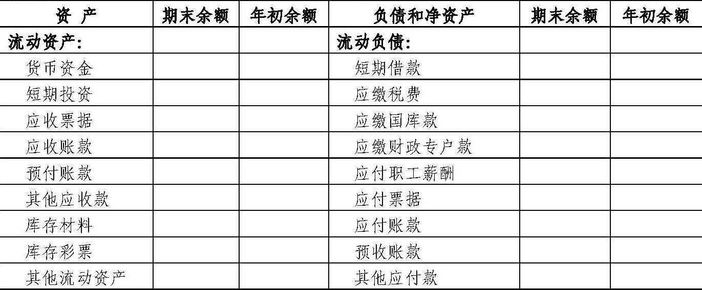
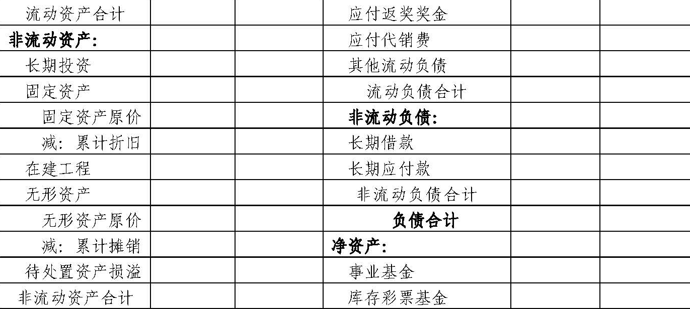
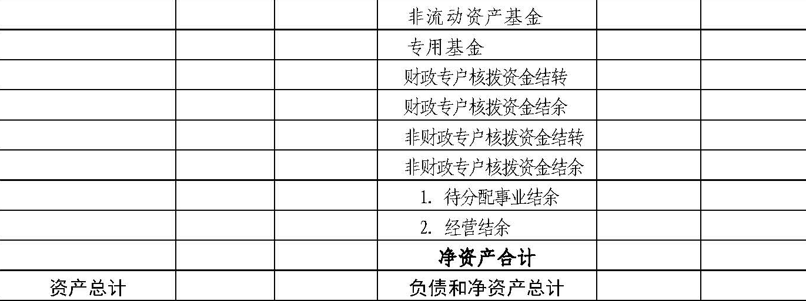
|
返奖奖金变动明细表
彩票资金分配明细表
| 填报单位： | ＿＿＿＿年度 | 会彩01表附表02
单位：元 |

|
说明：
1.本表中“彩票销售额”①=“彩票返奖奖金——计提金额——小计”②+“彩票公益金——计提金额”③+“彩票业务费——小计”④+“彩票代销费”⑤；
2.各彩票品种返奖奖金和公益金提取比例不同的应分栏填写。
|
收入支出表
财政专户核拨资金收入支出表
| 编制单位： | ＿＿＿＿年＿＿月 | 会彩03表
单位：元 |
|
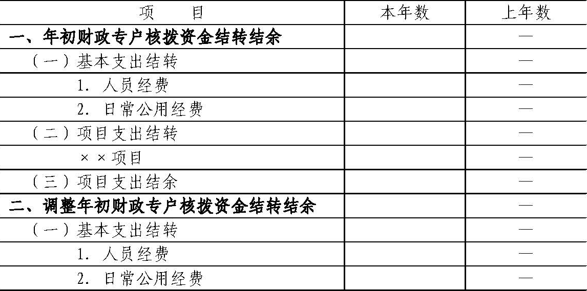
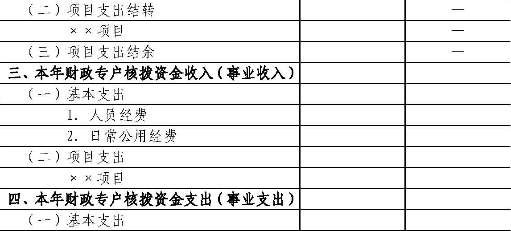
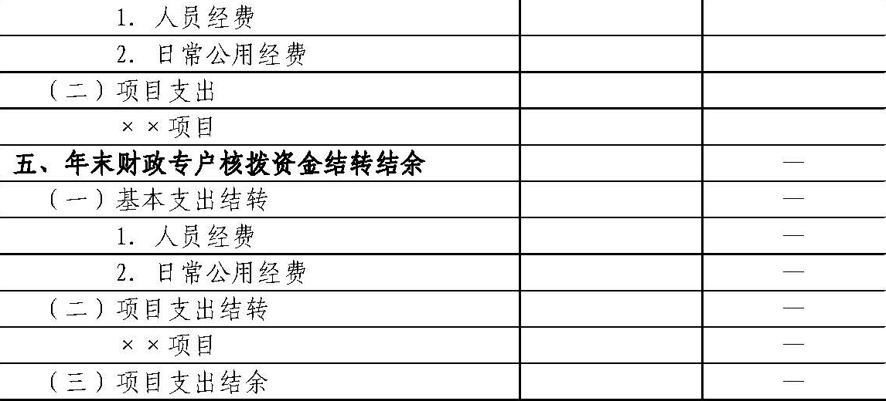
|
第五部分 财务报表编制说明
一、资产负债表编制说明
（一）本表反映彩票机构在某一特定日期全部资产、负债和净资产的情况。
（二）本表“年初余额”栏内各项数字，应当根据上年年末资产负债表“期末余额”栏内数字填列。
如果本年度资产负债表规定的各个项目的名称和内容同上年度不相一致，应对上年年末资产负债表各项目的名称和数字按照本年度的规定进行调整，填入本表“年初余额”栏内。
（三）本表“期末余额”栏各项目的内容和填列方法：
1.资产类项目
（1）“货币资金”项目，反映彩票机构期末库存现金、银行存款和零余额账户用款额度的合计数。本项目应当根据“库存现金”、“银行存款”、“零余额账户用款额度”科目的期末余额合计填列。
（2）“短期投资”项目，反映彩票机构期末持有的短期投资成本。本项目应当根据“短期投资”科目的期末余额填列。
（3）“应收票据”项目，反映彩票机构期末持有的应收票据的票面金额。本项目应当根据“应收票据”科目的期末余额填列。
（4）“应收账款”项目，反映彩票机构期末尚未收回的应收账款余额。本项目应当根据“应收账款”科目的期末余额填列。
（5）“预付账款”项目，反映彩票机构预付给商品或者劳务供应单位的款项。本项目应当根据“预付账款”科目的期末余额填列。
（6）“其他应收款”项目，反映彩票机构期末尚未收回的各项应收及暂付款项余额。本项目应当根据“其他应收款”科目的期末余额填列。
（7）“库存材料”项目，反映彩票机构期末为开展业务活动及其他活动中为耗用而储存的各种材料、燃料、包装物、低值易耗品、热敏纸、投注单及达不到固定资产标准的用具、装具、动植物等的实际成本。本项目应当根据“库存材料”科目的期末余额填列。
（8）“库存彩票”项目，反映彩票发行机构期末购进的已验收入库彩票的实际成本。本项目应当根据“库存彩票”科目的期末余额填列。
（9）“其他流动资产”项目，反映彩票机构除上述各项之外的其他流动资产，如将在1年内（含1年）到期的长期债券投资。本项目应当根据“长期投资”等科目的期末余额分析填列。
（10）“流动资产合计”项目，按照“货币资金”、“短期投资”、“应收票据”、“应收账款”、“预付账款”、“其他应收款”、“库存材料”、“库存彩票”、“其他流动资产”项目金额的合计数填列。
（11）“长期投资”项目，反映彩票机构持有时间超过1年（不含1年）的股权和债权性质的投资。本项目应当根据“长期投资”科目期末余额减去其中将于1年内（含1年）到期的长期债券投资余额后的金额填列。
（12）“固定资产”项目，反映彩票机构期末各项固定资产的账面价值。
本项目应当根据“固定资产”科目期末余额减去“累计折旧”科目期末余额后的金额填列。“固定资产原价”项目，反映彩票机构期末各项固定资产的原价。本项目应当根据“固定资产”科目的期末余额填列。“累计折旧”项目，反映彩票机构期末各项固定资产的累计折旧。本项目应当根据“累计折旧”科目的期末余额填列。
（13）“在建工程”项目，反映彩票机构期末尚未完工交付使用的在建工程发生的实际成本。
本项目应当根据“在建工程”科目的期末余额填列。
（14）“无形资产”项目，反映彩票机构期末持有的各项无形资产的账面价值。
本项目应当根据“无形资产”科目期末余额减去“累计摊销”科目期末余额后的金额填列。
“无形资产原价”项目，反映彩票机构期末持有的各项无形资产的原价。本项目应当根据“无形资产”科目的期末余额填列。“累计摊销”项目，反映彩票机构期末各项无形资产的累计摊销。本项目应当根据“累计摊销”科目的期末余额填列。
（15）“待处置资产损溢”项目，反映彩票机构期末待处置资产的价值及处置损溢。本项目应当根据“待处置资产损溢”科目的期末借方余额填列；如“待处置资产损溢”科目期末为贷方余额，则以“-”号填列。
（16）“非流动资产合计”项目，按照“长期投资”、“固定资产”、“在建工程”、“无形资产”、“待处置资产损溢”项目金额的合计数填列。
2.负债类项目
（17）“短期借款”项目，反映彩票机构借入的期限在1年内（含1年）的各种借款本金。
本项目应当根据“短期借款”科目的期末余额填列。
（18）“应缴税费”项目，反映彩票机构应交未交的各种税费。本项目应当根据“应缴税费”科目的期末贷方余额填列；如“应缴税费”科目期末为借方余额，则以“-”号填列。
（19）“应缴国库款”项目，反映彩票机构按规定应缴入国库的款项（应缴税费除外）。本项目应当根据“应缴国库款”科目的期末余额填列。
（20）“应缴财政专户款”项目，反映彩票机构按规定应缴入财政专户的款项。本项目应当根据“应缴财政专户款”科目的期末余额填列。
（21）“应付职工薪酬”项目，反映彩票机构按有关规定应付给职工及为职工支付的各种薪酬。本项目应当根据“应付职工薪酬”科目的期末余额填列。
（22）“应付票据”项目，反映彩票机构期末应付票据的票面金额。
本项目应当根据“应付票据”科目的期末余额填列。
（23）“应付账款”项目，反映彩票机构期末尚未支付的应付账款的金额。
本项目应当根据“应付账款”科目的期末余额填列。
（24）“预收账款”项目，反映彩票机构期末预收彩票销售款和按合同规定预收但尚未实际结算的款项。
本项目应当根据“预收账款”科目的期末余额填列。
（25）“其他应付款”项目，反映彩票机构期末应付未付的其他各项应付及暂收款项。
本项目应当根据“其他应付款”科目的期末余额填列。
（26）“应付返奖奖金”项目，反映彩票机构应返还给中奖者的奖金。
本项目应当根据“应付返奖奖金”科目的期末余额填列。
（27）“应付代销费”项目，反映彩票机构按彩票代销合同的约定比例从彩票销售额中提取，用于支付给彩票代销者的资金。
本项目应当根据“应付代销费”科目的期末余额填列。
（28）“其他流动负债”项目，反映彩票机构除上述各项之外的其他流动负债，如承担的将于1年内（含1年）偿还的长期负债。
本项目应当根据“长期借款”、“长期应付款”等科目的期末余额分析填列。
（29）“流动负债合计”项目，按照“短期借款”、“应缴税费”、“应缴国库款”、“应缴财政专户款”、“应付职工薪酬”、“应付票据”、“应付账款”、“预收账款”、“其他应付款”、“应付返奖奖金”、“应付代销费”、“其他流动负债”项目金额的合计数填列。
（30）“长期借款”项目，反映彩票机构借入的期限超过1年（不含1年）的各项借款本金。本项目应当根据“长期借款”科目的期末余额减去其中将于1年内（含1年）到期的长期借款余额后的金额填列。
（31）“长期应付款”项目，反映彩票机构发生的偿还期限超过1年（不含1年）的各种应付款项。本项目应当根据“长期应付款”科目的期末余额减去其中将于1年内（含1年）到期的长期应付款余额后的金额填列。
（32）“非流动负债合计”项目，按照“长期借款”、“长期应付款”项目金额的合计数填列。
3.净资产类项目
（33）“事业基金”项目，反映彩票机构期末拥有的非限定用途的净资产。本项目应当根据“事业基金”科目的期末余额填列。
（34）“库存彩票基金”项目，反映彩票发行机构购进的已验收入库彩票占用的金额。
本项目应当根据“库存彩票基金”科目的期末余额填列。
（35）“非流动资产基金”项目，反映彩票机构期末非流动资产占用的金额。
本项目应当根据“非流动资产基金”科目的期末余额填列。
（36）“专用基金”项目，反映彩票机构按规定设置或提取的具有专门用途的净资产。
本项目应当根据“专用基金”科目的期末余额填列。
（37）“财政专户核拨资金结转”项目，反映彩票机构滚存的财政专户核拨结转资金。本项目应当根据“财政专户核拨资金结转”科目的期末余额填列。
（38）“财政专户核拨资金结余”项目，反映彩票机构滚存的财政专户核拨结余资金。本项目应当根据“财政专户核拨资金结余”科目的期末余额填列。
（39）“非财政专户核拨资金结转”项目，反映彩票机构滚存的非财政专户核拨结转资金。本项目应当根据“非财政专户核拨资金结转”科目的期末余额填列。
（40）“非财政专户核拨资金结余”项目，反映彩票机构自年初至报告期末累计实现的非财政专户核拨资金结余弥补以前年度经营亏损后的余额。本项目应当根据“待分配事业结余”、“经营结余”科目的期末余额合计填列；如“待分配事业结余”、“经营结余”科目的期末余额合计为亏损数，则以“-”号填列。在编制年度资产负债表时，本项目金额一般应为“0”；如果不为“0”，本项目金额应为“经营结余”科目的期末借方余额（以“-”号填列）。“待分配事业结余”项目，反映彩票机构自年初至报告期末累计实现的可分配事业结余。本项目应当根据“待分配事业结余”科目的期末余额填列；如“待分配事业结余”科目的期末余额为亏损数，则以“-”号填列。在编制年度资产负债表时，本项目金额应为“0”。“经营结余”项目，反映彩票机构自年初至报告期末累计实现的经营结余弥补以前年度经营亏损后的余额。
本项目应当根据“经营结余”科目的期末余额填列；如“经营结余”科目的期末余额为亏损数，则以“-”号填列。
在编制年度资产负债表时，本项目金额一般应为“0”；如果不为“0”，本项目金额应为“经营结余”科目的期末借方余额（以“-”号填列）。
二、返奖奖金变动明细表编制说明
（一）本表反映彩票机构在某一会计年度内返奖奖金的兑付情况。
（二）本表中“年初余额”、“本年增加数”、“本年减少数”、“年末余额”、“调节基金”、“奖池”和“一般调节基金”各项目，应当根据“应付返奖奖金”科目各明细科目中的相关信息分析填列。
三、彩票资金分配明细表编制说明
（一）本表反映彩票机构在某一会计年度内彩票资金的分配情况。
（二）本表中“彩票销售额”、“彩票返奖奖金”、“彩票公益金”、“彩票业务费”和“彩票代销费”各栏，以及各栏的明细栏内各项数字，应当根据“应缴国库款”、“应付返奖奖金”、“应付代销费”等科目的明细科目中的相关信息分析填列。
四、收入支出表编制说明
（一）本表反映彩票机构在某一会计期间内各项收入、支出和结转结余情况，以及年末非财政专户核拨资金结余的分配情况。
（二）本表“本月数”栏反映各项目的本月实际发生数。在编制年度收入支出表时，应当将本栏改为“上年数”栏，反映上年度各项目的实际发生数；如果本年度收入支出表规定的各个项目的名称和内容同上年度不一致，应对上年度收入支出表各项目的名称和数字按照本年度的规定进行调整，填入本年度收入支出表的“上年数”栏。本表“本年累计数”栏反映各项目自年初起至报告期末止的累计实际发生数。编制年度收入支出表时，应当将本栏改为“本年数”。
（三）本表“本月数”栏各项目的内容和填列方法：
1.本期收入
（1）“本期收入”项目，反映彩票机构本期收入总额。本项目应当根据本表中“事业收入”、“上级补助收入”、“附属单位上缴收入”、“经营收入”和“其他收入”项目金额的合计数填列。
（2）“事业收入”项目，反映彩票机构本期开展彩票发行销售业务活动及其辅助活动取得的收入。
本项目应当根据“事业收入”科目的本期发生额填列。
（3）“上级补助收入”项目，反映彩票机构本期从主管部门和上级单位取得的非财政专户核拨资金收入。
本项目应当根据“上级补助收入”科目的本期发生额填列。
（4）“附属单位上缴收入”项目，反映彩票机构附属独立核算单位本期按照有关规定上缴的收入。
本项目应当根据“附属单位上缴收入”科目的本期发生额填列。
（5）“经营收入”项目，反映彩票机构本期在彩票发行销售业务活动及其辅助活动之外开展非独立核算经营活动取得的收入。
本项目应当根据“经营收入”科目的本期发生额填列。
（6）“其他收入”项目，反映彩票机构本期除事业收入、上级补助收入、附属单位上缴收入、经营收入以外的其他收入。
本项目应当根据“其他收入”科目的本期发生额填列。
2.本期支出
（7）“本期支出”项目，反映彩票机构本期支出总额。本项目应当根据本表中“事业支出”、“对附属单位补助支出”、“经营支出”、“其他支出”项目金额的合计数填列。
（8）“事业支出”项目，反映彩票机构本期使用财政专户核拨资金发生的彩票发行销售业务活动支出。
本项目应当根据“事业支出”科目本期发生额填列。
（9）“对附属单位补助支出”项目，反映彩票机构使用非财政专户核拨资金用于对附属单位补助支出的金额。
本项目根据“对附属单位补助支出”本期发生额填列。
（10）“经营支出”项目，反映彩票机构在彩票发行销售业务活动及其辅助活动之外开展非独立核算经营活动发生的支出。
本项目应当根据“经营支出”科目的本期发生额填列。
（11）“其他支出”项目，反映彩票机构除事业支出、对附属单位补助支出、经营支出以外的各项支出。
本项目根据“其他支出”本期发生额填列。
3.本期结转结余
（12）“本期结转结余”项目，反映彩票机构本期各项收支相抵后的余额。
本项目应当根据本项目下“财政专户核拨资金结转结余”、“非财政专户核拨资金结转结余”项目金额的合计数填列；如为负数，以“-”号填列。
（13）“财政专户核拨资金结转结余”项目，反映彩票机构本期事业收入与事业支出相抵后的余额。本项目应当按照本表中“事业收入”项目金额减去“事业支出”项目金额后的余额填列。
（14）“非财政专户核拨资金结转结余”项目，反映彩票机构本期除财政专户核拨资金结转结余之外的结转结余金额。
本项目应当按照本表中“上级补助收入”、“附属单位上缴收入”、“经营收入”和“其他收入”项目金额的合计数减去“对附属单位补助支出”、“经营支出”和“其他支出”项目金额的合计数后的余额填列；如为负数，以“-”号填列。
“非财政专户核拨资金结转”项目，反映彩票机构本期除事业收支以外的各专项资金收入与其相关支出相抵后剩余滚存的、须按规定用途使用的结转资金。
本项目应当按照“非财政专户核拨资金结转”科目本期余额填列。“待分配事业结余”项目，反映彩票机构自年初至报告期末累计实现的可分配事业结余。本项目应当根据“待分配事业结余”科目未结转前的期末余额填列；如“待分配事业结余”科目的期末余额为亏损数，则以“-”号填列。在编制年度收入支出表时，本项目金额应为“0”。“经营结余”项目，反映彩票机构本期经营收入与经营支出相抵后的差额。
本项目应当根据“经营结余”科目的期末余额填列；如“经营结余”科目的期末余额为亏损数，则以“-”号填列。
在编制年度收入支出表时，本项目金额一般应为“0”；如果不为“0”，本项目金额应为“经营结余”科目的年末借方余额（以“-”号填列）。
4.弥补以前年度经营亏损后的经营结余
（15）“弥补以前年度经营亏损后的经营结余”项目，反映彩票机构本年度实现的经营结余扣除本年初未弥补经营亏损后的余额。
本项目应当根据“经营结余”科目年末转入“非财政专户核拨资金结余分配”科目前的余额填列；如果“经营结余”科目年末余额为借方余额，以“-”号填列。
5.本年非财政专户核拨资金结余
（16）“本年非财政专户核拨资金结余”项目，反映彩票机构本年度除财政专户核拨资金之外的其他结余金额。
若果“经营结余”项目本年发生数为正数，本项目应当按照本表中“非财政专户核拨资金结转结余”项目本年发生额减去“非财政专户核拨资金结转”项目本年发生额后的金额填列；如果“经营结余”项目本年发生数为负数，本项目应当按照本表中“非财政专户核拨资金结转结余”项目本年发生额减去“非财政专户核拨资金结转”项目本年发生额和“经营结余”项目本年发生额后的金额填列；本项目如为负数，以“-”号填列。
本项目的余额应当与“非财政专户核拨资金结余分配”科目的本年贷方发生额保持一致。
（17）“应缴企业所得税”项目，反映彩票机构按照税法规定本年度应缴纳的企业所得税金额。
本项目应当根据“非财政专户核拨资金结余分配”科目的本年借方发生额分析填列。
（18）“提取专用基金”项目，反映彩票机构本年度按规定提取的专用基金金额。
本项目应当根据“非财政专户核拨资金结余分配”科目的本年发生额分析填列。
6.转入事业基金
（19）“转入事业基金”项目，反映彩票机构本年度按规定转入事业基金的非财政专户核拨资金结余资金。
本项目应当按照本表中“本年非财政专户核拨资金结余”项目金额减去“应缴企业所得税”、“提取专用基金”项目金额后的余额填列；如为负数，以“-”号填列。上述（15）至（19）项目，只有在编制年度收入支出表时才填列；编制月度收入支出表时，可以不设置此5个项目。
五、财政专户核拨资金收入支出表编制说明
（一）本表反映彩票机构某一会计年度由财政专户核拨资金形成的事业收入、事业支出和结转结余情况。
（二）本表“上年数”栏内各项数字，应当根据上年度“财政专户核拨资金收入支出表”中的“本年数”栏内数字填列。
（三）本表“本年数”栏各项目的内容和填列方法：
1.“年初财政专户核拨资金结转结余”项目及其所属各明细项目，反映彩票机构本年初财政专户核拨资金结转和结余余额。
各项目应当根据上年度财政专户核拨资金收入支出表中“年末财政专户核拨资金结转结余”项目及其所属各明细项目“本年数”栏的数字填列。
2.“调整年初财政专户核拨资金结转结余”项目及其所属各明细项目，反映彩票机构因本年度发生需要调整以前年度财政专户核拨资金结转结余的事项，而对年初财政专户核拨资金结转结余的调整金额。
各项目应当根据“财政专户核拨资金结转”、“财政专户核拨资金结余”科目及其所属明细科目的本年发生额分析填列。
如调整减少年初财政专户核拨资金结转结余，以“-”号填列。
3.“本年财政专户核拨资金收入（事业收入）”项目及其所属各明细项目，反映彩票机构本年度从财政专户核拨取得的各类拨款金额。
各项目应当根据“事业收入”科目及其所属明细科目的本年发生额填列。
4.“本年财政专户核拨资金支出（事业支出）”项目及其所属各明细项目，反映彩票机构本年度使用财政专户核拨资金的支出金额。
各项目应当根据“事业支出”科目及其所属明细科目本年发生额填列。
5.“年末财政专户核拨资金结转结余”项目及其所属各明细项目，反映彩票机构截至本年末的财政专户核拨资金结转和结余余额。
各项目应当根据“财政专户核拨资金结转”、“财政专户核拨资金结余”科目及其所属明细科目的年末余额填列。
六、附注
彩票机构的会计报表附注至少应当披露下列内容：
（一）遵循《事业单位会计准则》、《彩票机构会计制度》的声明；
（二）彩票机构整体财务状况、业务活动情况的说明；
（三）会计报表中列示的重要项目的进一步说明，包括其主要构成、增减变动情况等，特别是库存彩票的主要构成和本期增减变动情况；
（四）重要资产处置情况的说明；
（五）重大投资、借款活动的说明；
（六）以名义金额计量的资产名称、数量等情况，以及以名义金额计量理由的说明；
（七）以前年度各项结转结余调整情况的说明；
（八）有助于理解和分析会计报表需要说明的其他事项。